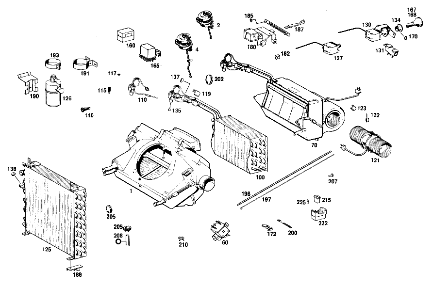

| № | Артикул | Название | Кол. | Примечание | Ограничение |
|---|---|---|---|---|---|
| 1 | A 115 830 27 62 | КОЖУХ СИСТЕМЫ ОТОПЛЕНИЯ | - | Z 55.705/01, Z 55.705/02, Z 55.705/03, Z 55.705/04, Z 55.705/05, Z 55.705/06, Z 55.705/07, Z 55.705/08, Z 55.705/09, Z 55.705/10 | |
| 1 | A 115 830 44 62 | КОЖУХ СИСТЕМЫ ОТОПЛЕНИЯ | 1 | Z 55.705/01, Z 55.705/02, Z 55.705/03, Z 55.705/04, Z 55.705/05, Z 55.705/06, Z 55.705/07, Z 55.705/08, Z 55.705/09, Z 55.705/10 [018] ALSO APPLICABLE TO VERSION 55705/11-/62 [033] FROM CHASSIS: 114.005-008,015,017,10/12 033609-139614 114.005-008,015,017,20/22 035261-139614 114.010, 10/12 031062 114.010, 20/62 032328 114.021, 10/12 001552-009185 114.021, 20/60,22/62 001736-009185 114.022, 10/50,12/52 000848-009185 114.022, 20/60,22/62 001604-009185 115.015, 10/12 032215-155810 115.015, 20/22 033764-155810 115.100,103,110,112,10/12 076505-318429 115.100-103,110,112,20/22 081680-318429 115.115, 10/12 035041-163753 115.115, 20/22 037291-163753 115.010, 10/50,12/52 034113-118594 115.010, 20/60,22/62 035852-118594 [026] FROM CHASSIS,SEE SA 55959 | |
| 2 | A 115 800 06 75 | ЭЛЕМЕНТ | - | Z 55.705/01, Z 55.705/02, Z 55.705/03, Z 55.705/04, Z 55.705/05, Z 55.705/06, Z 55.705/07, Z 55.705/08, Z 55.705/09, Z 55.705/10 [018] ALSO APPLICABLE TO VERSION 55705/11-/62 [034] FROM CHASSIS: 114.005-008,015,017,10/12 033609-131833 114.005-008,015,017,20/22 035261-131833 114.010, 10/12 031062 114.010, 20/22 032328 114.021, 10/12 001552 | |
| 2 | A 115 800 14 75 | ЭЛЕМЕНТ | - | Z 55.705/01, Z 55.705/02, Z 55.705/03, Z 55.705/04, Z 55.705/05, Z 55.705/06, Z 55.705/07, Z 55.705/08, Z 55.705/09, Z 55.705/10 | |
| 2 | A 000 800 17 75 | Исполнительный элемент | 1 | для SUMMER VENTILATION FLAP Z 55.705/01, Z 55.705/02, Z 55.705/03, Z 55.705/04, Z 55.705/05, Z 55.705/06, Z 55.705/07, Z 55.705/08, Z 55.705/09, Z 55.705/10 [018] ALSO APPLICABLE TO VERSION 55705/11-/62 [026] FROM CHASSIS,SEE SA 55959 [039] FROM CHASSIS: 114.005,007,008,015,017 131834-139614 114.011 017604-019475 114.023 009936-010157 114.060 006419-011055 114.062 005988-009185 114.072 004339-005662 [040] FROM CHASSIS: 114.073 001281-002442 115.000,002,020 112908-118594 115.015 145989-155810 115.100-103,110 299410-318429 115.115 153338-163753 | |
| 4 | A 115 800 07 75 | ЭЛЕМЕНТ | - | Z 55.705/01, Z 55.705/02, Z 55.705/03, Z 55.705/04, Z 55.705/05, Z 55.705/06, Z 55.705/07, Z 55.705/08, Z 55.705/09, Z 55.705/10 [018] ALSO APPLICABLE TO VERSION 55705/11-/62 [034] FROM CHASSIS: 114.005-008,015,017,10/12 033609-131833 114.005-008,015,017,20/22 035261-131833 114.010, 10/12 031062 114.010, 20/22 032328 114.021, 10/12 001552 | |
| 4 | A 115 800 15 75 | ЭЛЕМЕНТ | - | Z 55.705/01, Z 55.705/02, Z 55.705/03, Z 55.705/04, Z 55.705/05, Z 55.705/06, Z 55.705/07, Z 55.705/08, Z 55.705/09, Z 55.705/10 | |
| 4 | A 000 800 08 75 | ЭЛЕМЕНТ | - | Z 55.705/01, Z 55.705/02, Z 55.705/03, Z 55.705/04, Z 55.705/05, Z 55.705/06, Z 55.705/07, Z 55.705/08, Z 55.705/09, Z 55.705/10 | |
| 4 | A 000 800 11 75 | Исполнительный элемент | 1 | CHANGE\-OVER FLAP,EVAPORATOR HOUSING Z 55.705/01, Z 55.705/02, Z 55.705/03, Z 55.705/04, Z 55.705/05, Z 55.705/06, Z 55.705/07, Z 55.705/08, Z 55.705/09, Z 55.705/10 [018] ALSO APPLICABLE TO VERSION 55705/11-/62 [026] FROM CHASSIS,SEE SA 55959 [039] FROM CHASSIS: 114.005,007,008,015,017 131834-139614 114.011 017604-019475 114.023 009936-010157 114.060 006419-011055 114.062 005988-009185 114.072 004339-005662 [040] FROM CHASSIS: 114.073 001281-002442 115.000,002,020 112908-118594 115.015 145989-155810 115.100-103,110 299410-318429 115.115 153338-163753 | |
| 60 | A 000 545 95 11 | ВЫКЛЮЧАТЕЛЬ | - | Z 55.705/01, Z 55.705/02, Z 55.705/03, Z 55.705/04, Z 55.705/05, Z 55.705/06, Z 55.705/07, Z 55.705/08, Z 55.705/09, Z 55.705/10 | |
| 60 | A 001 545 01 11 | ВЫКЛЮЧАТЕЛЬ | - | Z 55.705/01, Z 55.705/02, Z 55.705/03, Z 55.705/04, Z 55.705/05, Z 55.705/06, Z 55.705/07, Z 55.705/08, Z 55.705/09, Z 55.705/10 | |
| 60 | A 115 821 18 51 | Переключатель | 1 | для HEATING\-AND\-COOLING BLOSER Z 55.705/01, Z 55.705/02, Z 55.705/03, Z 55.705/04, Z 55.705/05, Z 55.705/06, Z 55.705/07, Z 55.705/08, Z 55.705/09, Z 55.705/10 [018] ALSO APPLICABLE TO VERSION 55705/11-/62 [026] FROM CHASSIS,SEE SA 55959 [045] FROM CHASSIS: 114.005,007,008,015,017,10/12,50/52 033609-139614 114.005,007,008,015,017,20/22,60/62 035261-139614 114.010, 10/12,50/52 031062 114.010, 20/22,60/62 032328 114.021, 10/12,50/52 001552-009185 114.021, 20/22,60/62 001736-009185 114.022, 10/12,50/52 000843-009185 114.022, 20/22,60/62 001604-009185 115.000,002,010, 10/50,12/52 034113-118594 115.000,002,010, 20/60,22/62 035852-118594 115.015, 10/50,12/52 032215-155810 115.015, 20/60,22/62 033764-155810 115.100-103,110,112,10/12,50/52 076505-318429 115.100-103,110,112,60/62 081680-318429 115.115, 10/12,50/52 035041-163753 115.115, 20/22,60/62 037291-163753 [027] UP TO CHASSIS: 114.015,017 139614 114.011 019475 114.060 011055 114.021,022,062 009185 114.023 010157 114.072 005662 114.073 002442 115.000,002,010 118594 | |
| 70 | A 115 830 03 58 | ИСПАРИТЕЛЬ | 1 | Рулевое управление: Влево Z 55.705/01, Z 55.705/02, Z 55.705/03, Z 55.705/04, Z 55.705/05, Z 55.705/06, Z 55.705/07, Z 55.705/08, Z 55.705/09, Z 55.705/10 [018] ALSO APPLICABLE TO VERSION 55705/11-/62 [026] FROM CHASSIS,SEE SA 55959 [045] FROM CHASSIS: 114.005,007,008,015,017,10/12,50/52 033609-139614 114.005,007,008,015,017,20/22,60/62 035261-139614 114.010, 10/12,50/52 031062 114.010, 20/22,60/62 032328 114.021, 10/12,50/52 001552-009185 114.021, 20/22,60/62 001736-009185 114.022, 10/12,50/52 000843-009185 114.022, 20/22,60/62 001604-009185 115.000,002,010, 10/50,12/52 034113-118594 115.000,002,010, 20/60,22/62 035852-118594 115.015, 10/50,12/52 032215-155810 115.015, 20/60,22/62 033764-155810 115.100-103,110,112,10/12,50/52 076505-318429 115.100-103,110,112,60/62 081680-318429 115.115, 10/12,50/52 035041-163753 115.115, 20/22,60/62 037291-163753 [027] UP TO CHASSIS: 114.015,017 139614 114.011 019475 114.060 011055 114.021,022,062 009185 114.023 010157 114.072 005662 114.073 002442 115.000,002,010 118594 | |
| 100 | A 000 835 04 74 | - ИСПАРИТЕЛЬ | 1 | Рулевое управление: Влево Z 55.705/01, Z 55.705/02, Z 55.705/03, Z 55.705/04, Z 55.705/05, Z 55.705/06, Z 55.705/07, Z 55.705/08, Z 55.705/09, Z 55.705/10 [018] ALSO APPLICABLE TO VERSION 55705/11-/62 [026] FROM CHASSIS,SEE SA 55959 [027] UP TO CHASSIS: 114.015,017 139614 114.011 019475 114.060 011055 114.021,022,062 009185 114.023 010157 114.072 005662 114.073 002442 115.000,002,010 118594 | |
| 110 | A 115 835 00 72 | - КЛАПАН | 1 | Z 55.705/01, Z 55.705/02, Z 55.705/03, Z 55.705/04, Z 55.705/05, Z 55.705/06, Z 55.705/07, Z 55.705/08, Z 55.705/09, Z 55.705/10 [018] ALSO APPLICABLE TO VERSION 55705/11-/62 [026] FROM CHASSIS,SEE SA 55959 [027] UP TO CHASSIS: 114.015,017 139614 114.011 019475 114.060 011055 114.021,022,062 009185 114.023 010157 114.072 005662 114.073 002442 115.000,002,010 118594 | |
| 115 | A 108 835 02 47 | - Сетка | 1 | Z 55.705/01, Z 55.705/02, Z 55.705/03, Z 55.705/04, Z 55.705/05, Z 55.705/06, Z 55.705/07, Z 55.705/08, Z 55.705/09, Z 55.705/10 [018] ALSO APPLICABLE TO VERSION 55705/11-/62 [026] FROM CHASSIS,SEE SA 55959 [027] UP TO CHASSIS: 114.015,017 139614 114.011 019475 114.060 011055 114.021,022,062 009185 114.023 010157 114.072 005662 114.073 002442 115.000,002,010 118594 | |
| 117 | A 000 835 14 98 | - УПЛОТНИТЕЛЬ | - | Z 55.705/01, Z 55.705/02, Z 55.705/03, Z 55.705/04, Z 55.705/05, Z 55.705/06, Z 55.705/07, Z 55.705/08, Z 55.705/09, Z 55.705/10 | |
| 117 | A 000 835 05 98 | - уплотнение | 1 | Z 55.705/01, Z 55.705/02, Z 55.705/03, Z 55.705/04, Z 55.705/05, Z 55.705/06, Z 55.705/07, Z 55.705/08, Z 55.705/09, Z 55.705/10 [018] ALSO APPLICABLE TO VERSION 55705/11-/62 [026] FROM CHASSIS,SEE SA 55959 [027] UP TO CHASSIS: 114.015,017 139614 114.011 019475 114.060 011055 114.021,022,062 009185 114.023 010157 114.072 005662 114.073 002442 115.000,002,010 118594 | |
| 119 | A 108 835 03 91 | - ХОМУТ | - | Z 55.705/01, Z 55.705/02, Z 55.705/03, Z 55.705/04, Z 55.705/05, Z 55.705/06, Z 55.705/07, Z 55.705/08, Z 55.705/09, Z 55.705/10 | |
| 119 | A 000 995 29 20 | - хомут | 1 | Z 55.705/01, Z 55.705/02, Z 55.705/03, Z 55.705/04, Z 55.705/05, Z 55.705/06, Z 55.705/07, Z 55.705/08, Z 55.705/09, Z 55.705/10 [018] ALSO APPLICABLE TO VERSION 55705/11-/62 [026] FROM CHASSIS,SEE SA 55959 [027] UP TO CHASSIS: 114.015,017 139614 114.011 019475 114.060 011055 114.021,022,062 009185 114.023 010157 114.072 005662 114.073 002442 115.000,002,010 118594 | |
| 121 | A 115 830 00 08 | - ВЕНТИЛЯТОР | 1 | Z 55.705/01, Z 55.705/02, Z 55.705/03, Z 55.705/04, Z 55.705/05, Z 55.705/06, Z 55.705/07, Z 55.705/08, Z 55.705/09, Z 55.705/10 [018] ALSO APPLICABLE TO VERSION 55705/11-/62 [026] FROM CHASSIS,SEE SA 55959 [027] UP TO CHASSIS: 114.015,017 139614 114.011 019475 114.060 011055 114.021,022,062 009185 114.023 010157 114.072 005662 114.073 002442 115.000,002,010 118594 | |
| 122 | A 000 835 27 75 | - УГОЛНЫЕ ЩЕТКИ К-Т | - | Z 55.705/01, Z 55.705/02, Z 55.705/03, Z 55.705/04, Z 55.705/05, Z 55.705/06, Z 55.705/07, Z 55.705/08, Z 55.705/09, Z 55.705/10 | |
| 122 | A 000 835 25 75 | - УГОЛНЫЕ ЩЕТКИ К-Т | 2 | Z 55.705/01, Z 55.705/02, Z 55.705/03, Z 55.705/04, Z 55.705/05, Z 55.705/06, Z 55.705/07, Z 55.705/08, Z 55.705/09, Z 55.705/10 [018] ALSO APPLICABLE TO VERSION 55705/11-/62 [026] FROM CHASSIS,SEE SA 55959 [027] UP TO CHASSIS: 114.015,017 139614 114.011 019475 114.060 011055 114.021,022,062 009185 114.023 010157 114.072 005662 114.073 002442 115.000,002,010 118594 | |
| 123 | A 000 835 04 34 | - пружина | - | Z 55.705/01, Z 55.705/02, Z 55.705/03, Z 55.705/04, Z 55.705/05, Z 55.705/06, Z 55.705/07, Z 55.705/08, Z 55.705/09, Z 55.705/10 | |
| 123 | A 000 835 13 34 | - ПРУЖИНА | 11 | Z 55.705/01, Z 55.705/02, Z 55.705/03, Z 55.705/04, Z 55.705/05, Z 55.705/06, Z 55.705/07, Z 55.705/08, Z 55.705/09, Z 55.705/10 [018] ALSO APPLICABLE TO VERSION 55705/11-/62 [026] FROM CHASSIS,SEE SA 55959 [027] UP TO CHASSIS: 114.015,017 139614 114.011 019475 114.060 011055 114.021,022,062 009185 114.023 010157 114.072 005662 114.073 002442 115.000,002,010 118594 | |
| 125 | A 115 835 00 70 | Конденсатор | 1 | Z 55.705/01, Z 55.705/02, Z 55.705/03, Z 55.705/04, Z 55.705/05, Z 55.705/06, Z 55.705/07, Z 55.705/08, Z 55.705/09, Z 55.705/10 [018] ALSO APPLICABLE TO VERSION 55705/11-/62 [099] UP TO CHASSIS: 114.005-008,015,017 033718 114.010 031205 114.021 001551 114.022 000842 115.000,002,010 034112 115.015 032214 115.100,102,103,110,112 076504 115.115 035040 [051] FROM CHASSIS,SEE SA 55968 | |
| 126 | A 115 835 00 71 | БАЧОК | - | Z 55.705/01, Z 55.705/02, Z 55.705/03, Z 55.705/04, Z 55.705/05, Z 55.705/06, Z 55.705/07, Z 55.705/08, Z 55.705/09, Z 55.705/10 [018] ALSO APPLICABLE TO VERSION 55705/11-/62 [053] ИСПОЛЬЗ.СТАР.НОМЕР ДЕТАЛИ ПРИ ШАССИ: 114.010 046320 114.005,007,008,015,017 052016 114.021 003665 114.022 008271 114.023 001964 115.000,002,010 051804 115.015 054563 115.100-103,110,112 127269 115.115 059440 | |
| 126 | A 115 835 02 71 | БАЧОК | - | Z 55.705/01, Z 55.705/02, Z 55.705/03, Z 55.705/04, Z 55.705/05, Z 55.705/06, Z 55.705/07, Z 55.705/08, Z 55.705/09, Z 55.705/10 [018] ALSO APPLICABLE TO VERSION 55705/11-/62 [055] ИСПОЛЬЗ.СТАР.НОМЕР ДЕТАЛИ ПРИ ШАССИ: 114.010 050994 114.005-008,015,017 057902 114.011 000155 114.021 004381 114.022 010675 114.023 002614 115.000,002,010 057761 115.015 062280 115.100-103,110,112 143839 115.115 067368 | |
| 126 | A 115 835 03 71 | БАЧОК | - | Z 55.705/01, Z 55.705/02, Z 55.705/03, Z 55.705/04, Z 55.705/05, Z 55.705/06, Z 55.705/07, Z 55.705/08, Z 55.705/09, Z 55.705/10 | |
| 126 | A 115 835 04 71 | Бак | 1 | Z 55.705/01, Z 55.705/02, Z 55.705/03, Z 55.705/04, Z 55.705/05, Z 55.705/06, Z 55.705/07, Z 55.705/08, Z 55.705/09, Z 55.705/10 [018] ALSO APPLICABLE TO VERSION 55705/11-/62 | |
| 127 | A 115 833 00 80 | ВЫКЛЮЧАТЕЛЬ | 1 | РЕЛЕ ТЕМПЕРАТУРЫ Z 55.705/01, Z 55.705/02, Z 55.705/03, Z 55.705/04, Z 55.705/05, Z 55.705/06, Z 55.705/07, Z 55.705/08, Z 55.705/09, Z 55.705/10 [018] ALSO APPLICABLE TO VERSION 55705/11-/62 [046] UP TO CHASSIS: 114.005-008,015,017,10/12,50/52 033608 114.005-008,015,017,20/60,22/62 035260 114.010, 10/12,50/52 031061 114.010, 20/60,22/62 032327 [047] UP TO CHASSIS: 114.021,10/12,50/52 001551 114.021,20/22,60/62 001735 114.022,10/12,50/52 000842 114.022,20/22,60/62 001603 [048] UP TO CHASSIS: 115.000,002,010,10/12,50/52 034112 115.000,002,010,20/22,60/62 035851 115.015, 10/12,50/52 032214 115.015, 20/22,60/62 033763 [049] UP TO CHASSIS: 115.100-103,110,112,10/12,50/52 076504 115.100-103,110,112,20/22,60/62 081679 115.115, 10/12,50/52 035040 115.115, 20/22,60/62 037290 | |
| 130 | A 115 830 01 37 | ВЫКЛЮЧАТЕЛЬ | - | Z 55.705/01, Z 55.705/02, Z 55.705/03, Z 55.705/04, Z 55.705/05, Z 55.705/06, Z 55.705/07, Z 55.705/08, Z 55.705/09, Z 55.705/10 | |
| 130 | A 000 835 80 06 | ВЫКЛЮЧАТЕЛЬ | - | Z 55.705/01, Z 55.705/02, Z 55.705/03, Z 55.705/04, Z 55.705/05, Z 55.705/06, Z 55.705/07, Z 55.705/08, Z 55.705/09, Z 55.705/10 [018] ALSO APPLICABLE TO VERSION 55705/11-/62 [093] UP TO CHASSIS 114.011 014763 114.023 009209 114.060 001690 114.060 U.S.A. 002704 114.072 001904 114.073 000033 114.073 U.S.A. 000331 | |
| 130 | A 001 835 11 06 | ВЫКЛЮЧАТЕЛЬ | 1 | РЕЛЕ ТЕМПЕРАТУРЫ Z 55.705/01, Z 55.705/02, Z 55.705/03, Z 55.705/04, Z 55.705/05, Z 55.705/06, Z 55.705/07, Z 55.705/08, Z 55.705/09, Z 55.705/10 [018] ALSO APPLICABLE TO VERSION 55705/11-/62 [061] FROM CHASSIS: 114.005-008,015,017 124016 114.011 014764 114.023 009210 114.060 001691 114.060 U.S.A. 002705 114.072 001905 [062] FROM CHASSIS: 114.073 000034 114.073 U.S.A. 000332 115.000,002,010 105672 115.015 133578 115.115 140135 | |
| 131 | A 115 830 01 37 | ВЫКЛЮЧАТЕЛЬ | - | Z 55.705/01, Z 55.705/02, Z 55.705/03, Z 55.705/04, Z 55.705/05, Z 55.705/06, Z 55.705/07, Z 55.705/08, Z 55.705/09, Z 55.705/10 | |
| 131 | A 000 835 81 06 | ВЫКЛЮЧАТЕЛЬ | - | Z 55.705/01, Z 55.705/02, Z 55.705/03, Z 55.705/04, Z 55.705/05, Z 55.705/06, Z 55.705/07, Z 55.705/08, Z 55.705/09, Z 55.705/10 | |
| 131 | A 001 835 26 06 | ВЫКЛЮЧАТЕЛЬ | - | Z 55.705/01, Z 55.705/02, Z 55.705/03, Z 55.705/04, Z 55.705/05, Z 55.705/06, Z 55.705/07, Z 55.705/08, Z 55.705/09, Z 55.705/10 | |
| 131 | A 001 835 29 06 | Переключатель | 1 | ДВУХПОЗИЦИОННЫЙ ДАТЧИК РАЗРЕЖЕНИЯ Z 55.705/01, Z 55.705/02, Z 55.705/03, Z 55.705/04, Z 55.705/05, Z 55.705/06, Z 55.705/07, Z 55.705/08, Z 55.705/09, Z 55.705/10 [018] ALSO APPLICABLE TO VERSION 55705/11-/62 [061] FROM CHASSIS: 114.005-008,015,017 124016 114.011 014764 114.023 009210 114.060 001691 114.060 U.S.A. 002705 114.072 001905 [062] FROM CHASSIS: 114.073 000034 114.073 U.S.A. 000332 115.000,002,010 105672 115.015 133578 115.115 140135 | |
| 134 | A 115 833 00 89 | - Декоративная розетка | 1 | Z 55.705/01, Z 55.705/02, Z 55.705/03, Z 55.705/04, Z 55.705/05, Z 55.705/06, Z 55.705/07, Z 55.705/08, Z 55.705/09, Z 55.705/10 [018] ALSO APPLICABLE TO VERSION 55705/11-/62 [093] UP TO CHASSIS 114.011 014763 114.023 009209 114.060 001690 114.060 U.S.A. 002704 114.072 001904 114.073 000033 114.073 U.S.A. 000331 | |
| 135 | A 000 835 02 98 | уплотнение | - | Z 55.705/01, Z 55.705/02, Z 55.705/03, Z 55.705/04, Z 55.705/05, Z 55.705/06, Z 55.705/07, Z 55.705/08, Z 55.705/09, Z 55.705/10 | |
| 135 | A 000 835 65 98 | уплотнение | 1 | Z 55.705/01, Z 55.705/02, Z 55.705/03, Z 55.705/04, Z 55.705/05, Z 55.705/06, Z 55.705/07, Z 55.705/08, Z 55.705/09, Z 55.705/10 [018] ALSO APPLICABLE TO VERSION 55705/11-/62 | |
| 137 | A 000 835 03 98 | уплотнение | - | Z 55.705/01, Z 55.705/02, Z 55.705/03, Z 55.705/04, Z 55.705/05, Z 55.705/06, Z 55.705/07, Z 55.705/08, Z 55.705/09, Z 55.705/10 | |
| 137 | A 000 835 67 98 | уплотнение | 3 | Z 55.705/01, Z 55.705/02, Z 55.705/03, Z 55.705/04, Z 55.705/05, Z 55.705/06, Z 55.705/07, Z 55.705/08, Z 55.705/09, Z 55.705/10 [018] ALSO APPLICABLE TO VERSION 55705/11-/62 | |
| 138 | A 000 835 04 98 | уплотнение | - | Z 55.705/01, Z 55.705/02, Z 55.705/03, Z 55.705/04, Z 55.705/05, Z 55.705/06, Z 55.705/07, Z 55.705/08, Z 55.705/09, Z 55.705/10 | |
| 138 | A 000 835 66 98 | уплотнение | 4 | Z 55.705/01, Z 55.705/02, Z 55.705/03, Z 55.705/04, Z 55.705/05, Z 55.705/06, Z 55.705/07, Z 55.705/08, Z 55.705/09, Z 55.705/10 [018] ALSO APPLICABLE TO VERSION 55705/11-/62 | |
| 140 | A 108 835 00 47 | ФИЛЬТР | 1 | LIQUID TANK Z 55.705/01, Z 55.705/02, Z 55.705/03, Z 55.705/04, Z 55.705/05, Z 55.705/06, Z 55.705/07, Z 55.705/08, Z 55.705/09, Z 55.705/10 [018] ALSO APPLICABLE TO VERSION 55705/11-/62 | |
| 142 | A 112 805 00 55 | НАПРАВЛЯЮЩАЯ | 1 | THRU FRONT PANEL PILLAR Z 55.705/01, Z 55.705/02, Z 55.705/03, Z 55.705/04, Z 55.705/05, Z 55.705/06, Z 55.705/07, Z 55.705/08, Z 55.705/09, Z 55.705/10 [018] ALSO APPLICABLE TO VERSION 55705/11-/62 [045] FROM CHASSIS: 114.005,007,008,015,017,10/12,50/52 033609-139614 114.005,007,008,015,017,20/22,60/62 035261-139614 114.010, 10/12,50/52 031062 114.010, 20/22,60/62 032328 114.021, 10/12,50/52 001552-009185 114.021, 20/22,60/62 001736-009185 114.022, 10/12,50/52 000843-009185 114.022, 20/22,60/62 001604-009185 115.000,002,010, 10/50,12/52 034113-118594 115.000,002,010, 20/60,22/62 035852-118594 115.015, 10/50,12/52 032215-155810 115.015, 20/60,22/62 033764-155810 115.100-103,110,112,10/12,50/52 076505-318429 115.100-103,110,112,60/62 081680-318429 115.115, 10/12,50/52 035041-163753 115.115, 20/22,60/62 037291-163753 [065] UP TO CHASSIS: 114.005-008,015,017 061963 114.010 053122 114.011 001283 114.021 004767 114.022 011708 114.023 002938 115.000,002,010 060995 115.015 066576 115.100-103,110,112 152518 115.115 072238 [068] FROM CHASSIS SEE SA 55728 | |
| 143 | A 115 997 19 81 | резиновая втулка | 1 | Z 55.705/01, Z 55.705/02, Z 55.705/03, Z 55.705/04, Z 55.705/05, Z 55.705/06, Z 55.705/07, Z 55.705/08, Z 55.705/09, Z 55.705/10 [018] ALSO APPLICABLE TO VERSION 55705/11-/62 [045] FROM CHASSIS: 114.005,007,008,015,017,10/12,50/52 033609-139614 114.005,007,008,015,017,20/22,60/62 035261-139614 114.010, 10/12,50/52 031062 114.010, 20/22,60/62 032328 114.021, 10/12,50/52 001552-009185 114.021, 20/22,60/62 001736-009185 114.022, 10/12,50/52 000843-009185 114.022, 20/22,60/62 001604-009185 115.000,002,010, 10/50,12/52 034113-118594 115.000,002,010, 20/60,22/62 035852-118594 115.015, 10/50,12/52 032215-155810 115.015, 20/60,22/62 033764-155810 115.100-103,110,112,10/12,50/52 076505-318429 115.100-103,110,112,60/62 081680-318429 115.115, 10/12,50/52 035041-163753 115.115, 20/22,60/62 037291-163753 [065] UP TO CHASSIS: 114.005-008,015,017 061963 114.010 053122 114.011 001283 114.021 004767 114.022 011708 114.023 002938 115.000,002,010 060995 115.015 066576 115.100-103,110,112 152518 115.115 072238 [068] FROM CHASSIS SEE SA 55728 | |
| 145 | A 007 997 61 82 | Шланг | 0 | 9X2.75 MM Z 55.705/01, Z 55.705/02, Z 55.705/03, Z 55.705/04, Z 55.705/05, Z 55.705/06, Z 55.705/07, Z 55.705/08, Z 55.705/09, Z 55.705/10 [404] ЗАКАЗЫВАТЬ ПОГОННЫМИ МЕТРАМИ [018] ALSO APPLICABLE TO VERSION 55705/11-/62 [045] FROM CHASSIS: 114.005,007,008,015,017,10/12,50/52 033609-139614 114.005,007,008,015,017,20/22,60/62 035261-139614 114.010, 10/12,50/52 031062 114.010, 20/22,60/62 032328 114.021, 10/12,50/52 001552-009185 114.021, 20/22,60/62 001736-009185 114.022, 10/12,50/52 000843-009185 114.022, 20/22,60/62 001604-009185 115.000,002,010, 10/50,12/52 034113-118594 115.000,002,010, 20/60,22/62 035852-118594 115.015, 10/50,12/52 032215-155810 115.015, 20/60,22/62 033764-155810 115.100-103,110,112,10/12,50/52 076505-318429 115.100-103,110,112,60/62 081680-318429 115.115, 10/12,50/52 035041-163753 115.115, 20/22,60/62 037291-163753 [027] UP TO CHASSIS: 114.015,017 139614 114.011 019475 114.060 011055 114.021,022,062 009185 114.023 010157 114.072 005662 114.073 002442 115.000,002,010 118594 | |
| 145 | A 007 997 61 82 | - Шланг | 4 | AT Y\-SHAPE DISTRIBUTOR,AIR CONDITIONER CASE; 9X2.75 MM Z 55.705/01, Z 55.705/02, Z 55.705/03, Z 55.705/04, Z 55.705/05, Z 55.705/06, Z 55.705/07, Z 55.705/08, Z 55.705/09, Z 55.705/10 [404] ЗАКАЗЫВАТЬ ПОГОННЫМИ МЕТРАМИ | |
| 145 | A 007 997 61 82 | - Шланг | 4 | AT VACUUM ELEMENT,AIR CONDITIONER CASE; 9X2.75 MM Z 55.705/01, Z 55.705/02, Z 55.705/03, Z 55.705/04, Z 55.705/05, Z 55.705/06, Z 55.705/07, Z 55.705/08, Z 55.705/09, Z 55.705/10 [404] ЗАКАЗЫВАТЬ ПОГОННЫМИ МЕТРАМИ | |
| 145 | A 007 997 61 82 | - Шланг | 3 | AT COMBINED TEMPERATURE AND VACUUM SWITCH; 9X2.75 MM Z 55.705/01, Z 55.705/02, Z 55.705/03, Z 55.705/04, Z 55.705/05, Z 55.705/06, Z 55.705/07, Z 55.705/08, Z 55.705/09, Z 55.705/10 [404] ЗАКАЗЫВАТЬ ПОГОННЫМИ МЕТРАМИ | |
| 146 | A 008 997 83 82 | ШЛАНГ | 0 | СВЕТЛО\-ЗЕЛЕНЫЙ Z 55.705/01, Z 55.705/02, Z 55.705/03, Z 55.705/04, Z 55.705/05, Z 55.705/06, Z 55.705/07, Z 55.705/08, Z 55.705/09, Z 55.705/10 [018] ALSO APPLICABLE TO VERSION 55705/11-/62 [045] FROM CHASSIS: 114.005,007,008,015,017,10/12,50/52 033609-139614 114.005,007,008,015,017,20/22,60/62 035261-139614 114.010, 10/12,50/52 031062 114.010, 20/22,60/62 032328 114.021, 10/12,50/52 001552-009185 114.021, 20/22,60/62 001736-009185 114.022, 10/12,50/52 000843-009185 114.022, 20/22,60/62 001604-009185 115.000,002,010, 10/50,12/52 034113-118594 115.000,002,010, 20/60,22/62 035852-118594 115.015, 10/50,12/52 032215-155810 115.015, 20/60,22/62 033764-155810 115.100-103,110,112,10/12,50/52 076505-318429 115.100-103,110,112,60/62 081680-318429 115.115, 10/12,50/52 035041-163753 115.115, 20/22,60/62 037291-163753 [027] UP TO CHASSIS: 114.015,017 139614 114.011 019475 114.060 011055 114.021,022,062 009185 114.023 010157 114.072 005662 114.073 002442 115.000,002,010 118594 [404] ЗАКАЗЫВАТЬ ПОГОННЫМИ МЕТРАМИ | |
| 146 | A 008 997 83 82 | - ШЛАНГ | 1 | FROM Y\-DISTRIBUTOR TO AIR CONDITIONER CASE VACUUM ELEMENT,LEFT Z 55.705/01, Z 55.705/02, Z 55.705/03, Z 55.705/04, Z 55.705/05, Z 55.705/06, Z 55.705/07, Z 55.705/08, Z 55.705/09, Z 55.705/10 | |
| 146 | A 008 997 83 82 | - ШЛАНГ | 1 | FROM Y\-DISTRIBUTOR TO AIR CONDITIONER CASE VACUUM ELEMENT,RIGHT Z 55.705/01, Z 55.705/02, Z 55.705/03, Z 55.705/04, Z 55.705/05, Z 55.705/06, Z 55.705/07, Z 55.705/08, Z 55.705/09, Z 55.705/10 | |
| 150 | A 008 997 84 82 | ШЛАНГ | - | Z 55.705/01, Z 55.705/02, Z 55.705/03, Z 55.705/04, Z 55.705/05, Z 55.705/06, Z 55.705/07, Z 55.705/08, Z 55.705/09, Z 55.705/10 | |
| 150 | A 008 997 85 82 | Шланг | 0 | ЗЕЛЁНЫЙ (MITTELGRUEN) Z 55.705/01, Z 55.705/02, Z 55.705/03, Z 55.705/04, Z 55.705/05, Z 55.705/06, Z 55.705/07, Z 55.705/08, Z 55.705/09, Z 55.705/10 [018] ALSO APPLICABLE TO VERSION 55705/11-/62 [404] ЗАКАЗЫВАТЬ ПОГОННЫМИ МЕТРАМИ | |
| 150 | A 008 997 85 82 | - Шланг | 1 | FROM CHECK VALVE TO SUPPLY TANK Z 55.705/01, Z 55.705/02, Z 55.705/03, Z 55.705/04, Z 55.705/05, Z 55.705/06, Z 55.705/07, Z 55.705/08, Z 55.705/09, Z 55.705/10 [018] ALSO APPLICABLE TO VERSION 55705/11-/62 [045] FROM CHASSIS: 114.005,007,008,015,017,10/12,50/52 033609-139614 114.005,007,008,015,017,20/22,60/62 035261-139614 114.010, 10/12,50/52 031062 114.010, 20/22,60/62 032328 114.021, 10/12,50/52 001552-009185 114.021, 20/22,60/62 001736-009185 114.022, 10/12,50/52 000843-009185 114.022, 20/22,60/62 001604-009185 115.000,002,010, 10/50,12/52 034113-118594 115.000,002,010, 20/60,22/62 035852-118594 115.015, 10/50,12/52 032215-155810 115.015, 20/60,22/62 033764-155810 115.100-103,110,112,10/12,50/52 076505-318429 115.100-103,110,112,60/62 081680-318429 115.115, 10/12,50/52 035041-163753 115.115, 20/22,60/62 037291-163753 [027] UP TO CHASSIS: 114.015,017 139614 114.011 019475 114.060 011055 114.021,022,062 009185 114.023 010157 114.072 005662 114.073 002442 115.000,002,010 118594 [065] UP TO CHASSIS: 114.005-008,015,017 061963 114.010 053122 114.011 001283 114.021 004767 114.022 011708 114.023 002938 115.000,002,010 060995 115.015 066576 115.100-103,110,112 152518 115.115 072238 | |
| 150 | A 008 997 85 82 | - Шланг | 1 | FROM CHECK VALVE TO COMBINED TEMPERATURE AND VACUUM SWITCH Z 55.705/01, Z 55.705/02, Z 55.705/03, Z 55.705/04, Z 55.705/05, Z 55.705/06, Z 55.705/07, Z 55.705/08, Z 55.705/09, Z 55.705/10 [018] ALSO APPLICABLE TO VERSION 55705/11-/62 [045] FROM CHASSIS: 114.005,007,008,015,017,10/12,50/52 033609-139614 114.005,007,008,015,017,20/22,60/62 035261-139614 114.010, 10/12,50/52 031062 114.010, 20/22,60/62 032328 114.021, 10/12,50/52 001552-009185 114.021, 20/22,60/62 001736-009185 114.022, 10/12,50/52 000843-009185 114.022, 20/22,60/62 001604-009185 115.000,002,010, 10/50,12/52 034113-118594 115.000,002,010, 20/60,22/62 035852-118594 115.015, 10/50,12/52 032215-155810 115.015, 20/60,22/62 033764-155810 115.100-103,110,112,10/12,50/52 076505-318429 115.100-103,110,112,60/62 081680-318429 115.115, 10/12,50/52 035041-163753 115.115, 20/22,60/62 037291-163753 | |
| 152 | A 008 997 85 82 | Шланг | - | ТЕМНО\-ЗЕЛЕНЫЙ Z 55.705/01, Z 55.705/02, Z 55.705/03, Z 55.705/04, Z 55.705/05, Z 55.705/06, Z 55.705/07, Z 55.705/08, Z 55.705/09, Z 55.705/10 [018] ALSO APPLICABLE TO VERSION 55705/11-/62 [045] FROM CHASSIS: 114.005,007,008,015,017,10/12,50/52 033609-139614 114.005,007,008,015,017,20/22,60/62 035261-139614 114.010, 10/12,50/52 031062 114.010, 20/22,60/62 032328 114.021, 10/12,50/52 001552-009185 114.021, 20/22,60/62 001736-009185 114.022, 10/12,50/52 000843-009185 114.022, 20/22,60/62 001604-009185 115.000,002,010, 10/50,12/52 034113-118594 115.000,002,010, 20/60,22/62 035852-118594 115.015, 10/50,12/52 032215-155810 115.015, 20/60,22/62 033764-155810 115.100-103,110,112,10/12,50/52 076505-318429 115.100-103,110,112,60/62 081680-318429 115.115, 10/12,50/52 035041-163753 115.115, 20/22,60/62 037291-163753 [404] ЗАКАЗЫВАТЬ ПОГОННЫМИ МЕТРАМИ | |
| 152 | A 008 997 85 82 | - Шланг | 1 | FROM Y\-DISTRIBUTOR TO AIR CONDITIONER CASE VACUUM ELEMENT,LEFT Z 55.705/01, Z 55.705/02, Z 55.705/03, Z 55.705/04, Z 55.705/05, Z 55.705/06, Z 55.705/07, Z 55.705/08, Z 55.705/09, Z 55.705/10 | |
| 152 | A 008 997 85 82 | - Шланг | 1 | FROM Y\-DISTRIBUTOR TO AIR CONDITIONER CASE VACUUM ELEMENT,RIGHT Z 55.705/01, Z 55.705/02, Z 55.705/03, Z 55.705/04, Z 55.705/05, Z 55.705/06, Z 55.705/07, Z 55.705/08, Z 55.705/09, Z 55.705/10 | |
| 153 | A 115 805 03 22 | РАСПРЕДЕЛИТЕЛЬ | - | Z 55.705/01, Z 55.705/02, Z 55.705/03, Z 55.705/04, Z 55.705/05, Z 55.705/06, Z 55.705/07, Z 55.705/08, Z 55.705/09, Z 55.705/10 | |
| 153 | A 117 078 01 45 | Штуцер ответвления | 2 | Z 55.705/01, Z 55.705/02, Z 55.705/03, Z 55.705/04, Z 55.705/05, Z 55.705/06, Z 55.705/07, Z 55.705/08, Z 55.705/09, Z 55.705/10 [018] ALSO APPLICABLE TO VERSION 55705/11-/62 [045] FROM CHASSIS: 114.005,007,008,015,017,10/12,50/52 033609-139614 114.005,007,008,015,017,20/22,60/62 035261-139614 114.010, 10/12,50/52 031062 114.010, 20/22,60/62 032328 114.021, 10/12,50/52 001552-009185 114.021, 20/22,60/62 001736-009185 114.022, 10/12,50/52 000843-009185 114.022, 20/22,60/62 001604-009185 115.000,002,010, 10/50,12/52 034113-118594 115.000,002,010, 20/60,22/62 035852-118594 115.015, 10/50,12/52 032215-155810 115.015, 20/60,22/62 033764-155810 115.100-103,110,112,10/12,50/52 076505-318429 115.100-103,110,112,60/62 081680-318429 115.115, 10/12,50/52 035041-163753 115.115, 20/22,60/62 037291-163753 [027] UP TO CHASSIS: 114.015,017 139614 114.011 019475 114.060 011055 114.021,022,062 009185 114.023 010157 114.072 005662 114.073 002442 115.000,002,010 118594 | |
| 157 | A 000 990 03 92 | ЗАКЛЕПКА | - | Z 55.705/01, Z 55.705/02, Z 55.705/03, Z 55.705/04, Z 55.705/05, Z 55.705/06, Z 55.705/07, Z 55.705/08, Z 55.705/09, Z 55.705/10 | |
| 157 | A 000 990 22 92 | Распорная заклепка | 1 | Z 55.705/01, Z 55.705/02, Z 55.705/03, Z 55.705/04, Z 55.705/05, Z 55.705/06, Z 55.705/07, Z 55.705/08, Z 55.705/09, Z 55.705/10 [018] ALSO APPLICABLE TO VERSION 55705/11-/62 [045] FROM CHASSIS: 114.005,007,008,015,017,10/12,50/52 033609-139614 114.005,007,008,015,017,20/22,60/62 035261-139614 114.010, 10/12,50/52 031062 114.010, 20/22,60/62 032328 114.021, 10/12,50/52 001552-009185 114.021, 20/22,60/62 001736-009185 114.022, 10/12,50/52 000843-009185 114.022, 20/22,60/62 001604-009185 115.000,002,010, 10/50,12/52 034113-118594 115.000,002,010, 20/60,22/62 035852-118594 115.015, 10/50,12/52 032215-155810 115.015, 20/60,22/62 033764-155810 115.100-103,110,112,10/12,50/52 076505-318429 115.100-103,110,112,60/62 081680-318429 115.115, 10/12,50/52 035041-163753 115.115, 20/22,60/62 037291-163753 [027] UP TO CHASSIS: 114.015,017 139614 114.011 019475 114.060 011055 114.021,022,062 009185 114.023 010157 114.072 005662 114.073 002442 115.000,002,010 118594 | |
| 160 | A 000 545 71 01 | БЛОК ПРЕДОХРАНИТЕЛЕЙ | - | Z 55.705/01, Z 55.705/02, Z 55.705/03, Z 55.705/04, Z 55.705/05, Z 55.705/06, Z 55.705/07, Z 55.705/08, Z 55.705/09, Z 55.705/10 | |
| 160 | A 000 545 99 01 | Закр. блок предохр. | 1 | Z 55.705/01, Z 55.705/02, Z 55.705/03, Z 55.705/04, Z 55.705/05, Z 55.705/06, Z 55.705/07, Z 55.705/08, Z 55.705/09, Z 55.705/10 [018] ALSO APPLICABLE TO VERSION 55705/11-/62 [051] FROM CHASSIS,SEE SA 55968 [017] UP TO CHASSIS: 114.022 002348 115.000,002,010 037068 115.015 035901 115.100,102,103,110,112 084963 115.115 038667 | |
| 165 | A 000 542 59 19 | Контактор | 1 | Z 55.705/01, Z 55.705/02, Z 55.705/03, Z 55.705/04, Z 55.705/05, Z 55.705/06, Z 55.705/07, Z 55.705/08, Z 55.705/09, Z 55.705/10 [018] ALSO APPLICABLE TO VERSION 55705/11-/62 [051] FROM CHASSIS,SEE SA 55968 [017] UP TO CHASSIS: 114.022 002348 115.000,002,010 037068 115.015 035901 115.100,102,103,110,112 084963 115.115 038667 | |
| 167 | A 115 820 07 92 | Кнопка | 1 | с ESCUTCHEON Z 55.705/01, Z 55.705/02, Z 55.705/03, Z 55.705/04, Z 55.705/05, Z 55.705/06, Z 55.705/07, Z 55.705/08, Z 55.705/09, Z 55.705/10 [018] ALSO APPLICABLE TO VERSION 55705/11-/62 [071] UP TO CHASSIS: 114.005-008,015,017,10/12,50/52 033608 114.005-008,015,017,20/60,22/62 035260 114.010, 10/12,50/52 031061 114.010, 20/60,22/62 032327 114.021, 10/12,50/52 001551 114.021, 20/22,60/62 001735 114.022, 10/12,50/52 000845 114.022, 20/22,60/62 001603 115.000,002,010, 10/12,50/52 034112 115.000,002,010, 20/22,60/62 035851 115.015, 10/12,50/52 032214 115.015, 20/22,60/62 033763 115.100-103,110,112,10/12,50/52 076504 115.100-103,110,112,20/22,60/62 081679 115.115, 10/12,50/52 035040 115.115, 20/22,60/62 037290 | |
| 168 | A 115 820 08 92 | Кнопка | 1 | COMBINED TEMPERATURE AND VACUUM SWITCH Z 55.705/01, Z 55.705/02, Z 55.705/03, Z 55.705/04, Z 55.705/05, Z 55.705/06, Z 55.705/07, Z 55.705/08, Z 55.705/09, Z 55.705/10 [018] ALSO APPLICABLE TO VERSION 55705/11-/62 [045] FROM CHASSIS: 114.005,007,008,015,017,10/12,50/52 033609-139614 114.005,007,008,015,017,20/22,60/62 035261-139614 114.010, 10/12,50/52 031062 114.010, 20/22,60/62 032328 114.021, 10/12,50/52 001552-009185 114.021, 20/22,60/62 001736-009185 114.022, 10/12,50/52 000843-009185 114.022, 20/22,60/62 001604-009185 115.000,002,010, 10/50,12/52 034113-118594 115.000,002,010, 20/60,22/62 035852-118594 115.015, 10/50,12/52 032215-155810 115.015, 20/60,22/62 033764-155810 115.100-103,110,112,10/12,50/52 076505-318429 115.100-103,110,112,60/62 081680-318429 115.115, 10/12,50/52 035041-163753 115.115, 20/22,60/62 037291-163753 [057] UP TO CHASSIS: 114.005-008,015,017 124015 114.011 014763 114.023 009209 114.060 001691 114.060 U.S.A. 002704 114.072 001904 114.073 000033 114.073 U.S.A. 000331 115.000,002,010 105671 115.015 133577 115.115 140134 | |
| 170 | N 009045 012002 | Пруж. стопорное кольцо | 1 | Z 55.705/01, Z 55.705/02, Z 55.705/03, Z 55.705/04, Z 55.705/05, Z 55.705/06, Z 55.705/07, Z 55.705/08, Z 55.705/09, Z 55.705/10 [018] ALSO APPLICABLE TO VERSION 55705/11-/62 [045] FROM CHASSIS: 114.005,007,008,015,017,10/12,50/52 033609-139614 114.005,007,008,015,017,20/22,60/62 035261-139614 114.010, 10/12,50/52 031062 114.010, 20/22,60/62 032328 114.021, 10/12,50/52 001552-009185 114.021, 20/22,60/62 001736-009185 114.022, 10/12,50/52 000843-009185 114.022, 20/22,60/62 001604-009185 115.000,002,010, 10/50,12/52 034113-118594 115.000,002,010, 20/60,22/62 035852-118594 115.015, 10/50,12/52 032215-155810 115.015, 20/60,22/62 033764-155810 115.100-103,110,112,10/12,50/52 076505-318429 115.100-103,110,112,60/62 081680-318429 115.115, 10/12,50/52 035041-163753 115.115, 20/22,60/62 037291-163753 | |
| 172 | A 001 988 68 78 | Скоба | 1 | Z 55.705/01, Z 55.705/02, Z 55.705/03, Z 55.705/04, Z 55.705/05, Z 55.705/06, Z 55.705/07, Z 55.705/08, Z 55.705/09, Z 55.705/10 [018] ALSO APPLICABLE TO VERSION 55705/11-/62 | |
| 180 | A 115 830 01 85 | Устройство управления | 1 | Z 55.705/01, Z 55.705/02, Z 55.705/03, Z 55.705/04, Z 55.705/05, Z 55.705/06, Z 55.705/07, Z 55.705/08, Z 55.705/09, Z 55.705/10 [018] ALSO APPLICABLE TO VERSION 55705/11-/62 [046] UP TO CHASSIS: 114.005-008,015,017,10/12,50/52 033608 114.005-008,015,017,20/60,22/62 035260 114.010, 10/12,50/52 031061 114.010, 20/60,22/62 032327 [047] UP TO CHASSIS: 114.021,10/12,50/52 001551 114.021,20/22,60/62 001735 114.022,10/12,50/52 000842 114.022,20/22,60/62 001603 [048] UP TO CHASSIS: 115.000,002,010,10/12,50/52 034112 115.000,002,010,20/22,60/62 035851 115.015, 10/12,50/52 032214 115.015, 20/22,60/62 033763 [049] UP TO CHASSIS: 115.100-103,110,112,10/12,50/52 076504 115.100-103,110,112,20/22,60/62 081679 115.115, 10/12,50/52 035040 115.115, 20/22,60/62 037290 | |
| 182 | A 000 833 00 81 | - Крепежная скоба | 2 | Z 55.705/01, Z 55.705/02, Z 55.705/03, Z 55.705/04, Z 55.705/05, Z 55.705/06, Z 55.705/07, Z 55.705/08, Z 55.705/09, Z 55.705/10 [018] ALSO APPLICABLE TO VERSION 55705/11-/62 [046] UP TO CHASSIS: 114.005-008,015,017,10/12,50/52 033608 114.005-008,015,017,20/60,22/62 035260 114.010, 10/12,50/52 031061 114.010, 20/60,22/62 032327 [047] UP TO CHASSIS: 114.021,10/12,50/52 001551 114.021,20/22,60/62 001735 114.022,10/12,50/52 000842 114.022,20/22,60/62 001603 [048] UP TO CHASSIS: 115.000,002,010,10/12,50/52 034112 115.000,002,010,20/22,60/62 035851 115.015, 10/12,50/52 032214 115.015, 20/22,60/62 033763 [049] UP TO CHASSIS: 115.100-103,110,112,10/12,50/52 076504 115.100-103,110,112,20/22,60/62 081679 115.115, 10/12,50/52 035040 115.115, 20/22,60/62 037290 | |
| 185 | A 000 994 27 45 | Стопор болта | 2 | Z 55.705/01, Z 55.705/02, Z 55.705/03, Z 55.705/04, Z 55.705/05, Z 55.705/06, Z 55.705/07, Z 55.705/08, Z 55.705/09, Z 55.705/10 [018] ALSO APPLICABLE TO VERSION 55705/11-/62 [046] UP TO CHASSIS: 114.005-008,015,017,10/12,50/52 033608 114.005-008,015,017,20/60,22/62 035260 114.010, 10/12,50/52 031061 114.010, 20/60,22/62 032327 [047] UP TO CHASSIS: 114.021,10/12,50/52 001551 114.021,20/22,60/62 001735 114.022,10/12,50/52 000842 114.022,20/22,60/62 001603 [048] UP TO CHASSIS: 115.000,002,010,10/12,50/52 034112 115.000,002,010,20/22,60/62 035851 115.015, 10/12,50/52 032214 115.015, 20/22,60/62 033763 [049] UP TO CHASSIS: 115.100-103,110,112,10/12,50/52 076504 115.100-103,110,112,20/22,60/62 081679 115.115, 10/12,50/52 035040 115.115, 20/22,60/62 037290 | |
| 187 | A 115 833 00 40 | РУЧКА | 1 | Z 55.705/01, Z 55.705/02, Z 55.705/03, Z 55.705/04, Z 55.705/05, Z 55.705/06, Z 55.705/07, Z 55.705/08, Z 55.705/09, Z 55.705/10 [018] ALSO APPLICABLE TO VERSION 55705/11-/62 [046] UP TO CHASSIS: 114.005-008,015,017,10/12,50/52 033608 114.005-008,015,017,20/60,22/62 035260 114.010, 10/12,50/52 031061 114.010, 20/60,22/62 032327 [047] UP TO CHASSIS: 114.021,10/12,50/52 001551 114.021,20/22,60/62 001735 114.022,10/12,50/52 000842 114.022,20/22,60/62 001603 [048] UP TO CHASSIS: 115.000,002,010,10/12,50/52 034112 115.000,002,010,20/22,60/62 035851 115.015, 10/12,50/52 032214 115.015, 20/22,60/62 033763 [049] UP TO CHASSIS: 115.100-103,110,112,10/12,50/52 076504 115.100-103,110,112,20/22,60/62 081679 115.115, 10/12,50/52 035040 115.115, 20/22,60/62 037290 | |
| 188 | A 115 830 03 14 | ДЕРЖАТЕЛЬ | 1 | Z 55.705/01, Z 55.705/02, Z 55.705/03, Z 55.705/04, Z 55.705/05, Z 55.705/06, Z 55.705/07, Z 55.705/08, Z 55.705/09, Z 55.705/10 [018] ALSO APPLICABLE TO VERSION 55705/11-/62 | |
| 190 | A 115 835 07 14 | ДЕРЖАТЕЛЬ | 1 | LIQUID TANK Рулевое управление: Влево Z 55.705/01, Z 55.705/02, Z 55.705/03, Z 55.705/04, Z 55.705/05, Z 55.705/06, Z 55.705/07, Z 55.705/08, Z 55.705/09, Z 55.705/10 [018] ALSO APPLICABLE TO VERSION 55705/11-/62 | |
| 191 | A 115 835 10 14 | ДЕРЖАТЕЛЬ | 1 | Рулевое управление: Вправо Z 55.705/01, Z 55.705/02, Z 55.705/03, Z 55.705/04, Z 55.705/05, Z 55.705/06, Z 55.705/07, Z 55.705/08, Z 55.705/09, Z 55.705/10 [018] ALSO APPLICABLE TO VERSION 55705/11-/62 | |
| 193 | A 326 506 00 41 | ХОМУТ | - | Z 55.705/01, Z 55.705/02, Z 55.705/03, Z 55.705/04, Z 55.705/05, Z 55.705/06, Z 55.705/07, Z 55.705/08, Z 55.705/09, Z 55.705/10 | |
| 193 | A 114 995 03 35 | ХОМУТ | 1 | Рулевое управление: Влево Z 55.705/01, Z 55.705/02, Z 55.705/03, Z 55.705/04, Z 55.705/05, Z 55.705/06, Z 55.705/07, Z 55.705/08, Z 55.705/09, Z 55.705/10 [018] ALSO APPLICABLE TO VERSION 55705/11-/62 | |
| 196 | A 115 833 03 30 | СПИРАЛЬ | - | Z 55.705/01, Z 55.705/02, Z 55.705/03, Z 55.705/04, Z 55.705/05, Z 55.705/06, Z 55.705/07, Z 55.705/08, Z 55.705/09, Z 55.705/10 | |
| 196 | A 115 830 13 31 | Проволочная тяга | 1 | Z 55.705/01, Z 55.705/02, Z 55.705/03, Z 55.705/04, Z 55.705/05, Z 55.705/06, Z 55.705/07, Z 55.705/08, Z 55.705/09, Z 55.705/10 [018] ALSO APPLICABLE TO VERSION 55705/11-/62 [046] UP TO CHASSIS: 114.005-008,015,017,10/12,50/52 033608 114.005-008,015,017,20/60,22/62 035260 114.010, 10/12,50/52 031061 114.010, 20/60,22/62 032327 [047] UP TO CHASSIS: 114.021,10/12,50/52 001551 114.021,20/22,60/62 001735 114.022,10/12,50/52 000842 114.022,20/22,60/62 001603 [048] UP TO CHASSIS: 115.000,002,010,10/12,50/52 034112 115.000,002,010,20/22,60/62 035851 115.015, 10/12,50/52 032214 115.015, 20/22,60/62 033763 [049] UP TO CHASSIS: 115.100-103,110,112,10/12,50/52 076504 115.100-103,110,112,20/22,60/62 081679 115.115, 10/12,50/52 035040 115.115, 20/22,60/62 037290 | |
| 197 | A 110 833 03 31 | Проволочная тяга | 1 | Z 55.705/01, Z 55.705/02, Z 55.705/03, Z 55.705/04, Z 55.705/05, Z 55.705/06, Z 55.705/07, Z 55.705/08, Z 55.705/09, Z 55.705/10 [018] ALSO APPLICABLE TO VERSION 55705/11-/62 [046] UP TO CHASSIS: 114.005-008,015,017,10/12,50/52 033608 114.005-008,015,017,20/60,22/62 035260 114.010, 10/12,50/52 031061 114.010, 20/60,22/62 032327 [047] UP TO CHASSIS: 114.021,10/12,50/52 001551 114.021,20/22,60/62 001735 114.022,10/12,50/52 000842 114.022,20/22,60/62 001603 [048] UP TO CHASSIS: 115.000,002,010,10/12,50/52 034112 115.000,002,010,20/22,60/62 035851 115.015, 10/12,50/52 032214 115.015, 20/22,60/62 033763 [049] UP TO CHASSIS: 115.100-103,110,112,10/12,50/52 076504 115.100-103,110,112,20/22,60/62 081679 115.115, 10/12,50/52 035040 115.115, 20/22,60/62 037290 | |
| 200 | A 000 997 97 90 | СОЕДИНИТЕЛЬНЫЙ ЭЛЕМЕНТ | - | Z 55.705/01, Z 55.705/02, Z 55.705/03, Z 55.705/04, Z 55.705/05, Z 55.705/06, Z 55.705/07, Z 55.705/08, Z 55.705/09, Z 55.705/10 | |
| 200 | A 001 997 43 90 | Кабельная стяжка | 1 | 9X250 MM Z 55.705/01, Z 55.705/02, Z 55.705/03, Z 55.705/04, Z 55.705/05, Z 55.705/06, Z 55.705/07, Z 55.705/08, Z 55.705/09, Z 55.705/10 [018] ALSO APPLICABLE TO VERSION 55705/11-/62 | |
| 202 | A 186 997 07 81 | втулка | 2 | Z 55.705/01, Z 55.705/02, Z 55.705/03, Z 55.705/04, Z 55.705/05, Z 55.705/06, Z 55.705/07, Z 55.705/08, Z 55.705/09, Z 55.705/10 [402] БОЛЬШЕ НЕ ПОСТАВЛЯЕТСЯ [018] ALSO APPLICABLE TO VERSION 55705/11-/62 [075] UP TO CHASSIS: 114.015,017 114569 114.011 013543 114.023 008702 115.000,010 100957 115.015 126639 115.100,110 264038 | |
| 205 | A 110 997 04 81 | втулка | 0 | Z 55.705/01, Z 55.705/02, Z 55.705/03, Z 55.705/04, Z 55.705/05, Z 55.705/06, Z 55.705/07, Z 55.705/08, Z 55.705/09, Z 55.705/10 | |
| 205 | A 110 997 04 81 | - втулка | 1 | HOSE THRU FIRE WALL Z 55.705/01, Z 55.705/02, Z 55.705/03, Z 55.705/04, Z 55.705/05, Z 55.705/06, Z 55.705/07, Z 55.705/08, Z 55.705/09, Z 55.705/10 [018] ALSO APPLICABLE TO VERSION 55705/11-/62 [075] UP TO CHASSIS: 114.015,017 114569 114.011 013543 114.023 008702 115.000,010 100957 115.015 126639 115.100,110 264038 | |
| 205 | A 110 997 04 81 | - втулка | 2 | MOLDED HOSE THRU TUNNEL Z 55.705/01, Z 55.705/02, Z 55.705/03, Z 55.705/04, Z 55.705/05, Z 55.705/06, Z 55.705/07, Z 55.705/08, Z 55.705/09, Z 55.705/10 [018] ALSO APPLICABLE TO VERSION 55705/11-/62 [088] UP TO CHASSIS: 114.007,008,015,017 263350 114.011 111283 114.023 101200 114.060 123478 114.062 109025 114.072 103884 114.073 107647 115.005,017 082045 115.015 307712 115.105,107,108,117,119 122712 115.110 465720 115.114 047979 115.115 344106 | |
| 207 | A 110 987 05 39 | Резиновое крепление | 1 | Z 55.705/01, Z 55.705/02, Z 55.705/03, Z 55.705/04, Z 55.705/05, Z 55.705/06, Z 55.705/07, Z 55.705/08, Z 55.705/09, Z 55.705/10 [018] ALSO APPLICABLE TO VERSION 55705/11-/62 | |
| 208 | A 115 831 03 88 | ШЛАНГ | 2 | CONDENSED WATER Z 55.705/01, Z 55.705/02, Z 55.705/03, Z 55.705/04, Z 55.705/05, Z 55.705/06, Z 55.705/07, Z 55.705/08, Z 55.705/09, Z 55.705/10 [018] ALSO APPLICABLE TO VERSION 55705/11-/62 [404] ЗАКАЗЫВАТЬ ПОГОННЫМИ МЕТРАМИ | |
| 210 | A 000 995 42 44 | ХОМУТ | 2 | Z 55.705/01, Z 55.705/02, Z 55.705/03, Z 55.705/04, Z 55.705/05, Z 55.705/06, Z 55.705/07, Z 55.705/08, Z 55.705/09, Z 55.705/10 [018] ALSO APPLICABLE TO VERSION 55705/11-/62 [088] UP TO CHASSIS: 114.007,008,015,017 263350 114.011 111283 114.023 101200 114.060 123478 114.062 109025 114.072 103884 114.073 107647 115.005,017 082045 115.015 307712 115.105,107,108,117,119 122712 115.110 465720 115.114 047979 115.115 344106 | |
| 211 | A 115 680 15 79 | КОРПУС | - | Z 55.705/01, Z 55.705/02, Z 55.705/03, Z 55.705/04, Z 55.705/05, Z 55.705/06, Z 55.705/07, Z 55.705/08, Z 55.705/09, Z 55.705/10 | |
| 211 | A 115 680 00 79 | КОРПУС | - | Z 55.705/01, Z 55.705/02, Z 55.705/03, Z 55.705/04, Z 55.705/05, Z 55.705/06, Z 55.705/07, Z 55.705/08, Z 55.705/09, Z 55.705/10 [018] ALSO APPLICABLE TO VERSION 55705/11-/62 [406] ПРИ ЗАКАЗЕ УКАЗЫВАТЬ НОМЕР ЦВЕТА [076] UP TO CHASSIS: 114.015,017 029506 114.010 028056 115.015 028292 115.115 031075 115.010 030621 115.100,110,112 067821 [091] FOR THE NEW PART,SEE SA 55 704 | |
| 215 | A 002 545 49 28 | ШТЕКЕР | - | Z 55.705/01, Z 55.705/02, Z 55.705/03, Z 55.705/04, Z 55.705/05, Z 55.705/06, Z 55.705/07, Z 55.705/08, Z 55.705/09, Z 55.705/10 | |
| 215 | A 008 545 37 28 | Сцепление, механическое | 1 | ДВУХПОЛЮСНЫЙ; 2\-PIN Z 55.705/01, Z 55.705/02, Z 55.705/03, Z 55.705/04, Z 55.705/05, Z 55.705/06, Z 55.705/07, Z 55.705/08, Z 55.705/09, Z 55.705/10 [018] ALSO APPLICABLE TO VERSION 55705/11-/62 [051] FROM CHASSIS,SEE SA 55968 [071] UP TO CHASSIS: 114.005-008,015,017,10/12,50/52 033608 114.005-008,015,017,20/60,22/62 035260 114.010, 10/12,50/52 031061 114.010, 20/60,22/62 032327 114.021, 10/12,50/52 001551 114.021, 20/22,60/62 001735 114.022, 10/12,50/52 000845 114.022, 20/22,60/62 001603 115.000,002,010, 10/12,50/52 034112 115.000,002,010, 20/22,60/62 035851 115.015, 10/12,50/52 032214 115.015, 20/22,60/62 033763 115.100-103,110,112,10/12,50/52 076504 115.100-103,110,112,20/22,60/62 081679 115.115, 10/12,50/52 035040 115.115, 20/22,60/62 037290 | |
| 222 | A 000 545 55 28 | Штекер | 1 | Z 55.705/01, Z 55.705/02, Z 55.705/03, Z 55.705/04, Z 55.705/05, Z 55.705/06, Z 55.705/07, Z 55.705/08, Z 55.705/09, Z 55.705/10 [018] ALSO APPLICABLE TO VERSION 55705/11-/62 [051] FROM CHASSIS,SEE SA 55968 [071] UP TO CHASSIS: 114.005-008,015,017,10/12,50/52 033608 114.005-008,015,017,20/60,22/62 035260 114.010, 10/12,50/52 031061 114.010, 20/60,22/62 032327 114.021, 10/12,50/52 001551 114.021, 20/22,60/62 001735 114.022, 10/12,50/52 000845 114.022, 20/22,60/62 001603 115.000,002,010, 10/12,50/52 034112 115.000,002,010, 20/22,60/62 035851 115.015, 10/12,50/52 032214 115.015, 20/22,60/62 033763 115.100-103,110,112,10/12,50/52 076504 115.100-103,110,112,20/22,60/62 081679 115.115, 10/12,50/52 035040 115.115, 20/22,60/62 037290 | |
| 225 | A 000 545 27 26 | РОЗЕТКА | - | Рулевое управление: Вправо Z 55.705/01, Z 55.705/02, Z 55.705/03, Z 55.705/04, Z 55.705/05, Z 55.705/06, Z 55.705/07, Z 55.705/08, Z 55.705/09, Z 55.705/10 | |
| 225 | A 001 545 35 26 | Наружный круглый штекер | - | Рулевое управление: Вправо Z 55.705/01, Z 55.705/02, Z 55.705/03, Z 55.705/04, Z 55.705/05, Z 55.705/06, Z 55.705/07, Z 55.705/08, Z 55.705/09, Z 55.705/10 | |
| 225 | A 003 545 26 26 | Контактная втулка | 1 | 0.35\-4.0 MM2 RK4 Рулевое управление: Вправо Z 55.705/01, Z 55.705/02, Z 55.705/03, Z 55.705/04, Z 55.705/05, Z 55.705/06, Z 55.705/07, Z 55.705/08, Z 55.705/09, Z 55.705/10 [018] ALSO APPLICABLE TO VERSION 55705/11-/62 [051] FROM CHASSIS,SEE SA 55968 [071] UP TO CHASSIS: 114.005-008,015,017,10/12,50/52 033608 114.005-008,015,017,20/60,22/62 035260 114.010, 10/12,50/52 031061 114.010, 20/60,22/62 032327 114.021, 10/12,50/52 001551 114.021, 20/22,60/62 001735 114.022, 10/12,50/52 000845 114.022, 20/22,60/62 001603 115.000,002,010, 10/12,50/52 034112 115.000,002,010, 20/22,60/62 035851 115.015, 10/12,50/52 032214 115.015, 20/22,60/62 033763 115.100-103,110,112,10/12,50/52 076504 115.100-103,110,112,20/22,60/62 081679 115.115, 10/12,50/52 035040 115.115, 20/22,60/62 037290 | |
| A 115 830 13 62 | КОЖУХ СИСТЕМЫ ОТОПЛЕНИЯ | - | Z 55.705/01, Z 55.705/02, Z 55.705/03, Z 55.705/04, Z 55.705/05, Z 55.705/06, Z 55.705/07, Z 55.705/08, Z 55.705/09, Z 55.705/10 [018] ALSO APPLICABLE TO VERSION 55705/11-/62 [019] UP TO CHASSIS: 114.005-008,015,017,10/12,50/52 025019 114.005-008,015,017,20/60,22/62 028423 114.010 10/12,50/52 024607 114.010 20/60,22/62 027277 [020] UP TO CHASSIS: 115.015 10/12,50/52 023700 115.015 20/60,22/62 027277 115.000,002,010,10/12,50/52 026146 115.000,002,010 20/60,22/62 029631 [021] UP TO CHASSIS: 115.115 10/12,50/52 026253 115.100-103,110,112,10/12,50/52 057163 115.115 20/60,22/62 030060 115.100-103,110,112,20/60,22/62 065423 | ||
| A 115 830 37 62 | КОЖУХ СИСТЕМЫ ОТОПЛЕНИЯ | 1 | Z 55.705/01, Z 55.705/02, Z 55.705/03, Z 55.705/04, Z 55.705/05, Z 55.705/06, Z 55.705/07, Z 55.705/08, Z 55.705/09, Z 55.705/10 [018] ALSO APPLICABLE TO VERSION 55705/11-/62 [022] FROM CHASSIS: 114.005-008,015,017,10/12 025020-033608 114.010, 10/12 024608-031061 114.005-008,015,017,20/22 028424-035260 114.010, 20/22 027278-032327 [023] FROM CHASSIS: 115.015, 10/50,12/52 023701-032214 115.015, 20/60,22/62 027233-033763 115.000,002,010,10/50,12/52 026147-034112 115.000,002,010,20/60,22/62 029632-035851 [024] FROM CHASSIS: 115.115, 10/12 026254-035040 115.115, 20/22 030061-037290 115.100-103,110,112,10/12 057164-076504 115.100-103,110,112,20/22 065424-081679 [025] UP TO CHASSIS: 114.021,10/12,50/52 001551 114.021,20/60,22/62 001735 114.022,10/12,50/52 000842 114.022,20/60,22/62 001603 | ||
| A 115 805 09 74 | - Тяга переключения передач | 1 | для FRESH AIR FLAP Z 55.705/01, Z 55.705/02, Z 55.705/03, Z 55.705/04, Z 55.705/05, Z 55.705/06, Z 55.705/07, Z 55.705/08, Z 55.705/09, Z 55.705/10 [018] ALSO APPLICABLE TO VERSION 55705/11-/62 [026] FROM CHASSIS,SEE SA 55959 [039] FROM CHASSIS: 114.005,007,008,015,017 131834-139614 114.011 017604-019475 114.023 009936-010157 114.060 006419-011055 114.062 005988-009185 114.072 004339-005662 [040] FROM CHASSIS: 114.073 001281-002442 115.000,002,020 112908-118594 115.015 145989-155810 115.100-103,110 299410-318429 115.115 153338-163753 | ||
| A 115 805 10 74 | - Тяга переключения передач | 1 | CHANGE\-OVER FLAP,EVAPORATOR HOUSING Z 55.705/01, Z 55.705/02, Z 55.705/03, Z 55.705/04, Z 55.705/05, Z 55.705/06, Z 55.705/07, Z 55.705/08, Z 55.705/09, Z 55.705/10 [018] ALSO APPLICABLE TO VERSION 55705/11-/62 [026] FROM CHASSIS,SEE SA 55959 [039] FROM CHASSIS: 114.005,007,008,015,017 131834-139614 114.011 017604-019475 114.023 009936-010157 114.060 006419-011055 114.062 005988-009185 114.072 004339-005662 [040] FROM CHASSIS: 114.073 001281-002442 115.000,002,020 112908-118594 115.015 145989-155810 115.100-103,110 299410-318429 115.115 153338-163753 | ||
| N 912001 004000 | - Механический фиксатор | 2 | Z 55.705/01, Z 55.705/02, Z 55.705/03, Z 55.705/04, Z 55.705/05, Z 55.705/06, Z 55.705/07, Z 55.705/08, Z 55.705/09, Z 55.705/10 [018] ALSO APPLICABLE TO VERSION 55705/11-/62 [026] FROM CHASSIS,SEE SA 55959 [039] FROM CHASSIS: 114.005,007,008,015,017 131834-139614 114.011 017604-019475 114.023 009936-010157 114.060 006419-011055 114.062 005988-009185 114.072 004339-005662 [040] FROM CHASSIS: 114.073 001281-002442 115.000,002,020 112908-118594 115.015 145989-155810 115.100-103,110 299410-318429 115.115 153338-163753 | ||
| A 000 994 19 60 | - ПРЕДОХРАНИТЕЛЬ | - | Z 55.705/01, Z 55.705/02, Z 55.705/03, Z 55.705/04, Z 55.705/05, Z 55.705/06, Z 55.705/07, Z 55.705/08, Z 55.705/09, Z 55.705/10 | ||
| N 918002 004000 | - Пружинный зажим | 2 | Z 55.705/01, Z 55.705/02, Z 55.705/03, Z 55.705/04, Z 55.705/05, Z 55.705/06, Z 55.705/07, Z 55.705/08, Z 55.705/09, Z 55.705/10 [018] ALSO APPLICABLE TO VERSION 55705/11-/62 [026] FROM CHASSIS,SEE SA 55959 [039] FROM CHASSIS: 114.005,007,008,015,017 131834-139614 114.011 017604-019475 114.023 009936-010157 114.060 006419-011055 114.062 005988-009185 114.072 004339-005662 [040] FROM CHASSIS: 114.073 001281-002442 115.000,002,020 112908-118594 115.015 145989-155810 115.100-103,110 299410-318429 115.115 153338-163753 | ||
| N 007981 005211 | - Шуруп | 4 | Z 55.705/01, Z 55.705/02, Z 55.705/03, Z 55.705/04, Z 55.705/05, Z 55.705/06, Z 55.705/07, Z 55.705/08, Z 55.705/09, Z 55.705/10 [018] ALSO APPLICABLE TO VERSION 55705/11-/62 [026] FROM CHASSIS,SEE SA 55959 [039] FROM CHASSIS: 114.005,007,008,015,017 131834-139614 114.011 017604-019475 114.023 009936-010157 114.060 006419-011055 114.062 005988-009185 114.072 004339-005662 [040] FROM CHASSIS: 114.073 001281-002442 115.000,002,020 112908-118594 115.015 145989-155810 115.100-103,110 299410-318429 115.115 153338-163753 | ||
| N 007985 004125 | Винт | 2 | SWITCH TO AIR CONDITIONER CASE Z 55.705/01, Z 55.705/02, Z 55.705/03, Z 55.705/04, Z 55.705/05, Z 55.705/06, Z 55.705/07, Z 55.705/08, Z 55.705/09, Z 55.705/10 [018] ALSO APPLICABLE TO VERSION 55705/11-/62 [026] FROM CHASSIS,SEE SA 55959 [045] FROM CHASSIS: 114.005,007,008,015,017,10/12,50/52 033609-139614 114.005,007,008,015,017,20/22,60/62 035261-139614 114.010, 10/12,50/52 031062 114.010, 20/22,60/62 032328 114.021, 10/12,50/52 001552-009185 114.021, 20/22,60/62 001736-009185 114.022, 10/12,50/52 000843-009185 114.022, 20/22,60/62 001604-009185 115.000,002,010, 10/50,12/52 034113-118594 115.000,002,010, 20/60,22/62 035852-118594 115.015, 10/50,12/52 032215-155810 115.015, 20/60,22/62 033764-155810 115.100-103,110,112,10/12,50/52 076505-318429 115.100-103,110,112,60/62 081680-318429 115.115, 10/12,50/52 035041-163753 115.115, 20/22,60/62 037291-163753 | ||
| N 000127 004203 | Пружинное кольцо | - | Z 55.705/01, Z 55.705/02, Z 55.705/03, Z 55.705/04, Z 55.705/05, Z 55.705/06, Z 55.705/07, Z 55.705/08, Z 55.705/09, Z 55.705/10 | ||
| N 912004 004102 | Пружинное кольцо | 2 | SWITCH TO AIR CONDITIONER CASE Z 55.705/01, Z 55.705/02, Z 55.705/03, Z 55.705/04, Z 55.705/05, Z 55.705/06, Z 55.705/07, Z 55.705/08, Z 55.705/09, Z 55.705/10 [018] ALSO APPLICABLE TO VERSION 55705/11-/62 [026] FROM CHASSIS,SEE SA 55959 [045] FROM CHASSIS: 114.005,007,008,015,017,10/12,50/52 033609-139614 114.005,007,008,015,017,20/22,60/62 035261-139614 114.010, 10/12,50/52 031062 114.010, 20/22,60/62 032328 114.021, 10/12,50/52 001552-009185 114.021, 20/22,60/62 001736-009185 114.022, 10/12,50/52 000843-009185 114.022, 20/22,60/62 001604-009185 115.000,002,010, 10/50,12/52 034113-118594 115.000,002,010, 20/60,22/62 035852-118594 115.015, 10/50,12/52 032215-155810 115.015, 20/60,22/62 033764-155810 115.100-103,110,112,10/12,50/52 076505-318429 115.100-103,110,112,60/62 081680-318429 115.115, 10/12,50/52 035041-163753 115.115, 20/22,60/62 037291-163753 [027] UP TO CHASSIS: 114.015,017 139614 114.011 019475 114.060 011055 114.021,022,062 009185 114.023 010157 114.072 005662 114.073 002442 115.000,002,010 118594 | ||
| N 000433 004307 | Шайба | 2 | SWITCH TO AIR CONDITIONER CASE Z 55.705/01, Z 55.705/02, Z 55.705/03, Z 55.705/04, Z 55.705/05, Z 55.705/06, Z 55.705/07, Z 55.705/08, Z 55.705/09, Z 55.705/10 [018] ALSO APPLICABLE TO VERSION 55705/11-/62 [026] FROM CHASSIS,SEE SA 55959 [045] FROM CHASSIS: 114.005,007,008,015,017,10/12,50/52 033609-139614 114.005,007,008,015,017,20/22,60/62 035261-139614 114.010, 10/12,50/52 031062 114.010, 20/22,60/62 032328 114.021, 10/12,50/52 001552-009185 114.021, 20/22,60/62 001736-009185 114.022, 10/12,50/52 000843-009185 114.022, 20/22,60/62 001604-009185 115.000,002,010, 10/50,12/52 034113-118594 115.000,002,010, 20/60,22/62 035852-118594 115.015, 10/50,12/52 032215-155810 115.015, 20/60,22/62 033764-155810 115.100-103,110,112,10/12,50/52 076505-318429 115.100-103,110,112,60/62 081680-318429 115.115, 10/12,50/52 035041-163753 115.115, 20/22,60/62 037291-163753 [027] UP TO CHASSIS: 114.015,017 139614 114.011 019475 114.060 011055 114.021,022,062 009185 114.023 010157 114.072 005662 114.073 002442 115.000,002,010 118594 | ||
| A 115 830 00 58 | ИСПАРИТЕЛЬ | 1 | Рулевое управление: Влево Z 55.705/01, Z 55.705/02, Z 55.705/03, Z 55.705/04, Z 55.705/05, Z 55.705/06, Z 55.705/07, Z 55.705/08, Z 55.705/09, Z 55.705/10 [018] ALSO APPLICABLE TO VERSION 55705/11-/62 [046] UP TO CHASSIS: 114.005-008,015,017,10/12,50/52 033608 114.005-008,015,017,20/60,22/62 035260 114.010, 10/12,50/52 031061 114.010, 20/60,22/62 032327 [047] UP TO CHASSIS: 114.021,10/12,50/52 001551 114.021,20/22,60/62 001735 114.022,10/12,50/52 000842 114.022,20/22,60/62 001603 [048] UP TO CHASSIS: 115.000,002,010,10/12,50/52 034112 115.000,002,010,20/22,60/62 035851 115.015, 10/12,50/52 032214 115.015, 20/22,60/62 033763 [049] UP TO CHASSIS: 115.100-103,110,112,10/12,50/52 076504 115.100-103,110,112,20/22,60/62 081679 115.115, 10/12,50/52 035040 115.115, 20/22,60/62 037290 | ||
| A 115 830 01 58 | ИСПАРИТЕЛЬ | 1 | Рулевое управление: Вправо Z 55.705/01, Z 55.705/02, Z 55.705/03, Z 55.705/04, Z 55.705/05, Z 55.705/06, Z 55.705/07, Z 55.705/08, Z 55.705/09, Z 55.705/10 [018] ALSO APPLICABLE TO VERSION 55705/11-/62 [046] UP TO CHASSIS: 114.005-008,015,017,10/12,50/52 033608 114.005-008,015,017,20/60,22/62 035260 114.010, 10/12,50/52 031061 114.010, 20/60,22/62 032327 [047] UP TO CHASSIS: 114.021,10/12,50/52 001551 114.021,20/22,60/62 001735 114.022,10/12,50/52 000842 114.022,20/22,60/62 001603 [048] UP TO CHASSIS: 115.000,002,010,10/12,50/52 034112 115.000,002,010,20/22,60/62 035851 115.015, 10/12,50/52 032214 115.015, 20/22,60/62 033763 [049] UP TO CHASSIS: 115.100-103,110,112,10/12,50/52 076504 115.100-103,110,112,20/22,60/62 081679 115.115, 10/12,50/52 035040 115.115, 20/22,60/62 037290 | ||
| A 115 830 02 58 | ИСПАРИТЕЛЬ | 1 | Рулевое управление: Вправо Z 55.705/01, Z 55.705/02, Z 55.705/03, Z 55.705/04, Z 55.705/05, Z 55.705/06, Z 55.705/07, Z 55.705/08, Z 55.705/09, Z 55.705/10 [018] ALSO APPLICABLE TO VERSION 55705/11-/62 [026] FROM CHASSIS,SEE SA 55959 [045] FROM CHASSIS: 114.005,007,008,015,017,10/12,50/52 033609-139614 114.005,007,008,015,017,20/22,60/62 035261-139614 114.010, 10/12,50/52 031062 114.010, 20/22,60/62 032328 114.021, 10/12,50/52 001552-009185 114.021, 20/22,60/62 001736-009185 114.022, 10/12,50/52 000843-009185 114.022, 20/22,60/62 001604-009185 115.000,002,010, 10/50,12/52 034113-118594 115.000,002,010, 20/60,22/62 035852-118594 115.015, 10/50,12/52 032215-155810 115.015, 20/60,22/62 033764-155810 115.100-103,110,112,10/12,50/52 076505-318429 115.100-103,110,112,60/62 081680-318429 115.115, 10/12,50/52 035041-163753 115.115, 20/22,60/62 037291-163753 [027] UP TO CHASSIS: 114.015,017 139614 114.011 019475 114.060 011055 114.021,022,062 009185 114.023 010157 114.072 005662 114.073 002442 115.000,002,010 118594 | ||
| A 000 835 05 74 | - ИСПАРИТЕЛЬ | 1 | Рулевое управление: Вправо Z 55.705/01, Z 55.705/02, Z 55.705/03, Z 55.705/04, Z 55.705/05, Z 55.705/06, Z 55.705/07, Z 55.705/08, Z 55.705/09, Z 55.705/10 [018] ALSO APPLICABLE TO VERSION 55705/11-/62 [026] FROM CHASSIS,SEE SA 55959 [027] UP TO CHASSIS: 114.015,017 139614 114.011 019475 114.060 011055 114.021,022,062 009185 114.023 010157 114.072 005662 114.073 002442 115.000,002,010 118594 | ||
| A 115 830 09 31 | ТЯГА | - | Z 55.705/01, Z 55.705/02, Z 55.705/03, Z 55.705/04, Z 55.705/05, Z 55.705/06, Z 55.705/07, Z 55.705/08, Z 55.705/09, Z 55.705/10 | ||
| A 110 830 03 31 | ТЯГА | - | Z 55.705/01, Z 55.705/02, Z 55.705/03, Z 55.705/04, Z 55.705/05, Z 55.705/06, Z 55.705/07, Z 55.705/08, Z 55.705/09, Z 55.705/10 | ||
| A 115 830 11 31 | ТЯГА | 1 | СО СПИРАЛЬЮ Z 55.705/01, Z 55.705/02, Z 55.705/03, Z 55.705/04, Z 55.705/05, Z 55.705/06, Z 55.705/07, Z 55.705/08, Z 55.705/09, Z 55.705/10 [018] ALSO APPLICABLE TO VERSION 55705/11-/62 [026] FROM CHASSIS,SEE SA 55959 [027] UP TO CHASSIS: 114.015,017 139614 114.011 019475 114.060 011055 114.021,022,062 009185 114.023 010157 114.072 005662 114.073 002442 115.000,002,010 118594 | ||
| A 001 997 23 81 | КАБ. ВТУЛКА | 1 | Z 55.705/01, Z 55.705/02, Z 55.705/03, Z 55.705/04, Z 55.705/05, Z 55.705/06, Z 55.705/07, Z 55.705/08, Z 55.705/09, Z 55.705/10 [018] ALSO APPLICABLE TO VERSION 55705/11-/62 [026] FROM CHASSIS,SEE SA 55959 [027] UP TO CHASSIS: 114.015,017 139614 114.011 019475 114.060 011055 114.021,022,062 009185 114.023 010157 114.072 005662 114.073 002442 115.000,002,010 118594 | ||
| A 115 833 02 89 | - Декоративная розетка | 1 | Z 55.705/01, Z 55.705/02, Z 55.705/03, Z 55.705/04, Z 55.705/05, Z 55.705/06, Z 55.705/07, Z 55.705/08, Z 55.705/09, Z 55.705/10 [018] ALSO APPLICABLE TO VERSION 55705/11-/62 [061] FROM CHASSIS: 114.005-008,015,017 124016 114.011 014764 114.023 009210 114.060 001691 114.060 U.S.A. 002705 114.072 001905 [062] FROM CHASSIS: 114.073 000034 114.073 U.S.A. 000332 115.000,002,010 105672 115.015 133578 115.115 140135 | ||
| A 115 805 01 19 | БАЧОК | - | Z 55.705/01, Z 55.705/02, Z 55.705/03, Z 55.705/04, Z 55.705/05, Z 55.705/06, Z 55.705/07, Z 55.705/08, Z 55.705/09, Z 55.705/10 | ||
| A 115 800 05 19 | БАЧОК | 1 | Z 55.705/01, Z 55.705/02, Z 55.705/03, Z 55.705/04, Z 55.705/05, Z 55.705/06, Z 55.705/07, Z 55.705/08, Z 55.705/09, Z 55.705/10 [402] БОЛЬШЕ НЕ ПОСТАВЛЯЕТСЯ [018] ALSO APPLICABLE TO VERSION 55705/11-/62 [045] FROM CHASSIS: 114.005,007,008,015,017,10/12,50/52 033609-139614 114.005,007,008,015,017,20/22,60/62 035261-139614 114.010, 10/12,50/52 031062 114.010, 20/22,60/62 032328 114.021, 10/12,50/52 001552-009185 114.021, 20/22,60/62 001736-009185 114.022, 10/12,50/52 000843-009185 114.022, 20/22,60/62 001604-009185 115.000,002,010, 10/50,12/52 034113-118594 115.000,002,010, 20/60,22/62 035852-118594 115.015, 10/50,12/52 032215-155810 115.015, 20/60,22/62 033764-155810 115.100-103,110,112,10/12,50/52 076505-318429 115.100-103,110,112,60/62 081680-318429 115.115, 10/12,50/52 035041-163753 115.115, 20/22,60/62 037291-163753 [065] UP TO CHASSIS: 114.005-008,015,017 061963 114.010 053122 114.011 001283 114.021 004767 114.022 011708 114.023 002938 115.000,002,010 060995 115.015 066576 115.100-103,110,112 152518 115.115 072238 [068] FROM CHASSIS SEE SA 55728 | ||
| N 000125 006421 | Шайба | 2 | Z 55.705/01, Z 55.705/02, Z 55.705/03, Z 55.705/04, Z 55.705/05, Z 55.705/06, Z 55.705/07, Z 55.705/08, Z 55.705/09, Z 55.705/10 [018] ALSO APPLICABLE TO VERSION 55705/11-/62 [045] FROM CHASSIS: 114.005,007,008,015,017,10/12,50/52 033609-139614 114.005,007,008,015,017,20/22,60/62 035261-139614 114.010, 10/12,50/52 031062 114.010, 20/22,60/62 032328 114.021, 10/12,50/52 001552-009185 114.021, 20/22,60/62 001736-009185 114.022, 10/12,50/52 000843-009185 114.022, 20/22,60/62 001604-009185 115.000,002,010, 10/50,12/52 034113-118594 115.000,002,010, 20/60,22/62 035852-118594 115.015, 10/50,12/52 032215-155810 115.015, 20/60,22/62 033764-155810 115.100-103,110,112,10/12,50/52 076505-318429 115.100-103,110,112,60/62 081680-318429 115.115, 10/12,50/52 035041-163753 115.115, 20/22,60/62 037291-163753 [065] UP TO CHASSIS: 114.005-008,015,017 061963 114.010 053122 114.011 001283 114.021 004767 114.022 011708 114.023 002938 115.000,002,010 060995 115.015 066576 115.100-103,110,112 152518 115.115 072238 [068] FROM CHASSIS SEE SA 55728 | ||
| A 094 990 68 10 | Пружинное кольцо | 2 | Z 55.705/01, Z 55.705/02, Z 55.705/03, Z 55.705/04, Z 55.705/05, Z 55.705/06, Z 55.705/07, Z 55.705/08, Z 55.705/09, Z 55.705/10 [018] ALSO APPLICABLE TO VERSION 55705/11-/62 [045] FROM CHASSIS: 114.005,007,008,015,017,10/12,50/52 033609-139614 114.005,007,008,015,017,20/22,60/62 035261-139614 114.010, 10/12,50/52 031062 114.010, 20/22,60/62 032328 114.021, 10/12,50/52 001552-009185 114.021, 20/22,60/62 001736-009185 114.022, 10/12,50/52 000843-009185 114.022, 20/22,60/62 001604-009185 115.000,002,010, 10/50,12/52 034113-118594 115.000,002,010, 20/60,22/62 035852-118594 115.015, 10/50,12/52 032215-155810 115.015, 20/60,22/62 033764-155810 115.100-103,110,112,10/12,50/52 076505-318429 115.100-103,110,112,60/62 081680-318429 115.115, 10/12,50/52 035041-163753 115.115, 20/22,60/62 037291-163753 [065] UP TO CHASSIS: 114.005-008,015,017 061963 114.010 053122 114.011 001283 114.021 004767 114.022 011708 114.023 002938 115.000,002,010 060995 115.015 066576 115.100-103,110,112 152518 115.115 072238 [068] FROM CHASSIS SEE SA 55728 | ||
| N 000934 006007 | Гайка | 2 | Z 55.705/01, Z 55.705/02, Z 55.705/03, Z 55.705/04, Z 55.705/05, Z 55.705/06, Z 55.705/07, Z 55.705/08, Z 55.705/09, Z 55.705/10 [018] ALSO APPLICABLE TO VERSION 55705/11-/62 [045] FROM CHASSIS: 114.005,007,008,015,017,10/12,50/52 033609-139614 114.005,007,008,015,017,20/22,60/62 035261-139614 114.010, 10/12,50/52 031062 114.010, 20/22,60/62 032328 114.021, 10/12,50/52 001552-009185 114.021, 20/22,60/62 001736-009185 114.022, 10/12,50/52 000843-009185 114.022, 20/22,60/62 001604-009185 115.000,002,010, 10/50,12/52 034113-118594 115.000,002,010, 20/60,22/62 035852-118594 115.015, 10/50,12/52 032215-155810 115.015, 20/60,22/62 033764-155810 115.100-103,110,112,10/12,50/52 076505-318429 115.100-103,110,112,60/62 081680-318429 115.115, 10/12,50/52 035041-163753 115.115, 20/22,60/62 037291-163753 [065] UP TO CHASSIS: 114.005-008,015,017 061963 114.010 053122 114.011 001283 114.021 004767 114.022 011708 114.023 002938 115.000,002,010 060995 115.015 066576 115.100-103,110,112 152518 115.115 072238 [068] FROM CHASSIS SEE SA 55728 | ||
| N 072571 002015 | Хомут | 1 | Z 55.705/01, Z 55.705/02, Z 55.705/03, Z 55.705/04, Z 55.705/05, Z 55.705/06, Z 55.705/07, Z 55.705/08, Z 55.705/09, Z 55.705/10 [018] ALSO APPLICABLE TO VERSION 55705/11-/62 [045] FROM CHASSIS: 114.005,007,008,015,017,10/12,50/52 033609-139614 114.005,007,008,015,017,20/22,60/62 035261-139614 114.010, 10/12,50/52 031062 114.010, 20/22,60/62 032328 114.021, 10/12,50/52 001552-009185 114.021, 20/22,60/62 001736-009185 114.022, 10/12,50/52 000843-009185 114.022, 20/22,60/62 001604-009185 115.000,002,010, 10/50,12/52 034113-118594 115.000,002,010, 20/60,22/62 035852-118594 115.015, 10/50,12/52 032215-155810 115.015, 20/60,22/62 033764-155810 115.100-103,110,112,10/12,50/52 076505-318429 115.100-103,110,112,60/62 081680-318429 115.115, 10/12,50/52 035041-163753 115.115, 20/22,60/62 037291-163753 [027] UP TO CHASSIS: 114.015,017 139614 114.011 019475 114.060 011055 114.021,022,062 009185 114.023 010157 114.072 005662 114.073 002442 115.000,002,010 118594 | ||
| N 007981 004261 | Шуруп | 2 | Z 55.705/01, Z 55.705/02, Z 55.705/03, Z 55.705/04, Z 55.705/05, Z 55.705/06, Z 55.705/07, Z 55.705/08, Z 55.705/09, Z 55.705/10 [018] ALSO APPLICABLE TO VERSION 55705/11-/62 [051] FROM CHASSIS,SEE SA 55968 [017] UP TO CHASSIS: 114.022 002348 115.000,002,010 037068 115.015 035901 115.100,102,103,110,112 084963 115.115 038667 | ||
| A 000 545 83 34 | предохранитель | 1 | Z 55.705/01, Z 55.705/02, Z 55.705/03, Z 55.705/04, Z 55.705/05, Z 55.705/06, Z 55.705/07, Z 55.705/08, Z 55.705/09, Z 55.705/10 [018] ALSO APPLICABLE TO VERSION 55705/11-/62 | ||
| A 000 545 43 34 | ПРЕДОХРАНИТЕЛЬ | - | Z 55.705/01, Z 55.705/02, Z 55.705/03, Z 55.705/04, Z 55.705/05, Z 55.705/06, Z 55.705/07, Z 55.705/08, Z 55.705/09, Z 55.705/10 | ||
| N 072581 016100 | Плавкая вставка | - | Z 55.705/01, Z 55.705/02, Z 55.705/03, Z 55.705/04, Z 55.705/05, Z 55.705/06, Z 55.705/07, Z 55.705/08, Z 55.705/09, Z 55.705/10 | ||
| A 000 545 83 34 | предохранитель | 1 | Z 55.705/01, Z 55.705/02, Z 55.705/03, Z 55.705/04, Z 55.705/05, Z 55.705/06, Z 55.705/07, Z 55.705/08, Z 55.705/09, Z 55.705/10 [018] ALSO APPLICABLE TO VERSION 55705/11-/62 | ||
| N 007985 004128 | Винт | 2 | Z 55.705/01, Z 55.705/02, Z 55.705/03, Z 55.705/04, Z 55.705/05, Z 55.705/06, Z 55.705/07, Z 55.705/08, Z 55.705/09, Z 55.705/10 [018] ALSO APPLICABLE TO VERSION 55705/11-/62 [051] FROM CHASSIS,SEE SA 55968 [017] UP TO CHASSIS: 114.022 002348 115.000,002,010 037068 115.015 035901 115.100,102,103,110,112 084963 115.115 038667 | ||
| N 000127 004203 | Пружинное кольцо | - | Z 55.705/01, Z 55.705/02, Z 55.705/03, Z 55.705/04, Z 55.705/05, Z 55.705/06, Z 55.705/07, Z 55.705/08, Z 55.705/09, Z 55.705/10 | ||
| N 912004 004102 | Пружинное кольцо | 2 | Z 55.705/01, Z 55.705/02, Z 55.705/03, Z 55.705/04, Z 55.705/05, Z 55.705/06, Z 55.705/07, Z 55.705/08, Z 55.705/09, Z 55.705/10 [018] ALSO APPLICABLE TO VERSION 55705/11-/62 [051] FROM CHASSIS,SEE SA 55968 [017] UP TO CHASSIS: 114.022 002348 115.000,002,010 037068 115.015 035901 115.100,102,103,110,112 084963 115.115 038667 | ||
| N 000934 004006 | Гайка | 2 | Z 55.705/01, Z 55.705/02, Z 55.705/03, Z 55.705/04, Z 55.705/05, Z 55.705/06, Z 55.705/07, Z 55.705/08, Z 55.705/09, Z 55.705/10 [018] ALSO APPLICABLE TO VERSION 55705/11-/62 [051] FROM CHASSIS,SEE SA 55968 [017] UP TO CHASSIS: 114.022 002348 115.000,002,010 037068 115.015 035901 115.100,102,103,110,112 084963 115.115 038667 | ||
| N 000127 004203 | Пружинное кольцо | - | Z 55.705/01, Z 55.705/02, Z 55.705/03, Z 55.705/04, Z 55.705/05, Z 55.705/06, Z 55.705/07, Z 55.705/08, Z 55.705/09, Z 55.705/10 | ||
| N 912004 004102 | Пружинное кольцо | 2 | Z 55.705/01, Z 55.705/02, Z 55.705/03, Z 55.705/04, Z 55.705/05, Z 55.705/06, Z 55.705/07, Z 55.705/08, Z 55.705/09, Z 55.705/10 [018] ALSO APPLICABLE TO VERSION 55705/11-/62 | ||
| N 007976 004211 | Шуруп | 2 | 4,8X25 Z 55.705/01, Z 55.705/02, Z 55.705/03, Z 55.705/04, Z 55.705/05, Z 55.705/06, Z 55.705/07, Z 55.705/08, Z 55.705/09, Z 55.705/10 [018] ALSO APPLICABLE TO VERSION 55705/11-/62 | ||
| A 115 833 01 73 | ТАБЛИЧКА | 1 | TEMPERATURE/VACUUM SWITCH IN ENGLISH ONLY Z 55.705/01, Z 55.705/02, Z 55.705/03, Z 55.705/04, Z 55.705/05, Z 55.705/06, Z 55.705/07, Z 55.705/08, Z 55.705/09, Z 55.705/10 [018] ALSO APPLICABLE TO VERSION 55705/11-/62 [061] FROM CHASSIS: 114.005-008,015,017 124016 114.011 014764 114.023 009210 114.060 001691 114.060 U.S.A. 002705 114.072 001905 [062] FROM CHASSIS: 114.073 000034 114.073 U.S.A. 000332 115.000,002,010 105672 115.015 133578 115.115 140135 | ||
| A 115 820 21 92 | Кнопка | 1 | С ПОДСВЕТКОЙ Z 55.705/01, Z 55.705/02, Z 55.705/03, Z 55.705/04, Z 55.705/05, Z 55.705/06, Z 55.705/07, Z 55.705/08, Z 55.705/09, Z 55.705/10 [018] ALSO APPLICABLE TO VERSION 55705/11-/62 [061] FROM CHASSIS: 114.005-008,015,017 124016 114.011 014764 114.023 009210 114.060 001691 114.060 U.S.A. 002705 114.072 001905 [062] FROM CHASSIS: 114.073 000034 114.073 U.S.A. 000332 115.000,002,010 105672 115.015 133578 115.115 140135 | ||
| N 072601 012230 | - Лампа накаливания | 1 | 12V\-1.2W Z 55.705/01, Z 55.705/02, Z 55.705/03, Z 55.705/04, Z 55.705/05, Z 55.705/06, Z 55.705/07, Z 55.705/08, Z 55.705/09, Z 55.705/10 [018] ALSO APPLICABLE TO VERSION 55705/11-/62 [061] FROM CHASSIS: 114.005-008,015,017 124016 114.011 014764 114.023 009210 114.060 001691 114.060 U.S.A. 002705 114.072 001905 [062] FROM CHASSIS: 114.073 000034 114.073 U.S.A. 000332 115.000,002,010 105672 115.015 133578 115.115 140135 | ||
| A 115 820 02 52 | Контрольная лампа | 1 | Z 55.705/01, Z 55.705/02, Z 55.705/03, Z 55.705/04, Z 55.705/05, Z 55.705/06, Z 55.705/07, Z 55.705/08, Z 55.705/09, Z 55.705/10 [018] ALSO APPLICABLE TO VERSION 55705/11-/62 [402] БОЛЬШЕ НЕ ПОСТАВЛЯЕТСЯ [073] FROM CHASSIS: 114.005,007,008,015,017 087068 114.010 067057 114.011 006991 114.021 006890 114.022 017107 114.023 005209 115.000,002,010 081259 115.015 094571 115.100,102,103,110,112 208086 115.115 101750 [084] UP TO CHASSIS: 114.005,007,010,021,022 UNTIL PRODUCTION STOP 114.008,017 254476 114.011 109790 114.015 253616 114.023 101032 114.060 120026 114.062 108090 114.072 103582 114.073 106555 115.000,002,010,100,102,103,112 UNTIL PRODUCTION STOP 115.005,007,017 061796 115.015 283207 115.105,107,117 101509 115.108,119 103170 115.110 454659 115.114 028117 115.115 309373 | ||
| A 000 994 70 45 | ПРЕДОХРАНИТЕЛЬ | 1 | Z 55.705/01, Z 55.705/02, Z 55.705/03, Z 55.705/04, Z 55.705/05, Z 55.705/06, Z 55.705/07, Z 55.705/08, Z 55.705/09, Z 55.705/10 [018] ALSO APPLICABLE TO VERSION 55705/11-/62 [402] БОЛЬШЕ НЕ ПОСТАВЛЯЕТСЯ [073] FROM CHASSIS: 114.005,007,008,015,017 087068 114.010 067057 114.011 006991 114.021 006890 114.022 017107 114.023 005209 115.000,002,010 081259 115.015 094571 115.100,102,103,110,112 208086 115.115 101750 [084] UP TO CHASSIS: 114.005,007,010,021,022 UNTIL PRODUCTION STOP 114.008,017 254476 114.011 109790 114.015 253616 114.023 101032 114.060 120026 114.062 108090 114.072 103582 114.073 106555 115.000,002,010,100,102,103,112 UNTIL PRODUCTION STOP 115.005,007,017 061796 115.015 283207 115.105,107,117 101509 115.108,119 103170 115.110 454659 115.114 028117 115.115 309373 | ||
| N 007982 004245 | Шуруп | 2 | Z 55.705/01, Z 55.705/02, Z 55.705/03, Z 55.705/04, Z 55.705/05, Z 55.705/06, Z 55.705/07, Z 55.705/08, Z 55.705/09, Z 55.705/10 [018] ALSO APPLICABLE TO VERSION 55705/11-/62 [046] UP TO CHASSIS: 114.005-008,015,017,10/12,50/52 033608 114.005-008,015,017,20/60,22/62 035260 114.010, 10/12,50/52 031061 114.010, 20/60,22/62 032327 [047] UP TO CHASSIS: 114.021,10/12,50/52 001551 114.021,20/22,60/62 001735 114.022,10/12,50/52 000842 114.022,20/22,60/62 001603 [048] UP TO CHASSIS: 115.000,002,010,10/12,50/52 034112 115.000,002,010,20/22,60/62 035851 115.015, 10/12,50/52 032214 115.015, 20/22,60/62 033763 [049] UP TO CHASSIS: 115.100-103,110,112,10/12,50/52 076504 115.100-103,110,112,20/22,60/62 081679 115.115, 10/12,50/52 035040 115.115, 20/22,60/62 037290 | ||
| N 006797 005334 | Зубчатая шайба | 2 | Z 55.705/01, Z 55.705/02, Z 55.705/03, Z 55.705/04, Z 55.705/05, Z 55.705/06, Z 55.705/07, Z 55.705/08, Z 55.705/09, Z 55.705/10 [018] ALSO APPLICABLE TO VERSION 55705/11-/62 [046] UP TO CHASSIS: 114.005-008,015,017,10/12,50/52 033608 114.005-008,015,017,20/60,22/62 035260 114.010, 10/12,50/52 031061 114.010, 20/60,22/62 032327 [047] UP TO CHASSIS: 114.021,10/12,50/52 001551 114.021,20/22,60/62 001735 114.022,10/12,50/52 000842 114.022,20/22,60/62 001603 [048] UP TO CHASSIS: 115.000,002,010,10/12,50/52 034112 115.000,002,010,20/22,60/62 035851 115.015, 10/12,50/52 032214 115.015, 20/22,60/62 033763 [049] UP TO CHASSIS: 115.100-103,110,112,10/12,50/52 076504 115.100-103,110,112,20/22,60/62 081679 115.115, 10/12,50/52 035040 115.115, 20/22,60/62 037290 | ||
| A 115 830 04 14 | ДЕРЖАТЕЛЬ | 1 | СПРАВА Z 55.705/01, Z 55.705/02, Z 55.705/03, Z 55.705/04, Z 55.705/05, Z 55.705/06, Z 55.705/07, Z 55.705/08, Z 55.705/09, Z 55.705/10 [018] ALSO APPLICABLE TO VERSION 55705/11-/62 | ||
| N 007976 004205 | Шуруп | 4 | Z 55.705/01, Z 55.705/02, Z 55.705/03, Z 55.705/04, Z 55.705/05, Z 55.705/06, Z 55.705/07, Z 55.705/08, Z 55.705/09, Z 55.705/10 [018] ALSO APPLICABLE TO VERSION 55705/11-/62 | ||
| A 115 984 00 22 | ПЛОСКАЯ ГАЙКА | - | Z 55.705/01, Z 55.705/02, Z 55.705/03, Z 55.705/04, Z 55.705/05, Z 55.705/06, Z 55.705/07, Z 55.705/08, Z 55.705/09, Z 55.705/10 | ||
| N 913008 006300 | Гайка | 2 | Z 55.705/01, Z 55.705/02, Z 55.705/03, Z 55.705/04, Z 55.705/05, Z 55.705/06, Z 55.705/07, Z 55.705/08, Z 55.705/09, Z 55.705/10 [018] ALSO APPLICABLE TO VERSION 55705/11-/62 | ||
| N 000933 006102 | Винт | 2 | CONDENSER TO BRACKET Z 55.705/01, Z 55.705/02, Z 55.705/03, Z 55.705/04, Z 55.705/05, Z 55.705/06, Z 55.705/07, Z 55.705/08, Z 55.705/09, Z 55.705/10 [018] ALSO APPLICABLE TO VERSION 55705/11-/62 | ||
| N 000125 006407 | ШАЙБА | 2 | Z 55.705/01, Z 55.705/02, Z 55.705/03, Z 55.705/04, Z 55.705/05, Z 55.705/06, Z 55.705/07, Z 55.705/08, Z 55.705/09, Z 55.705/10 [018] ALSO APPLICABLE TO VERSION 55705/11-/62 | ||
| A 094 990 68 10 | Пружинное кольцо | 2 | Z 55.705/01, Z 55.705/02, Z 55.705/03, Z 55.705/04, Z 55.705/05, Z 55.705/06, Z 55.705/07, Z 55.705/08, Z 55.705/09, Z 55.705/10 [018] ALSO APPLICABLE TO VERSION 55705/11-/62 | ||
| N 000933 006102 | Винт | 2 | CONDENSER TO FRONT STIFFENING Z 55.705/01, Z 55.705/02, Z 55.705/03, Z 55.705/04, Z 55.705/05, Z 55.705/06, Z 55.705/07, Z 55.705/08, Z 55.705/09, Z 55.705/10 [018] ALSO APPLICABLE TO VERSION 55705/11-/62 | ||
| N 000125 006407 | ШАЙБА | 2 | Z 55.705/01, Z 55.705/02, Z 55.705/03, Z 55.705/04, Z 55.705/05, Z 55.705/06, Z 55.705/07, Z 55.705/08, Z 55.705/09, Z 55.705/10 [018] ALSO APPLICABLE TO VERSION 55705/11-/62 | ||
| A 094 990 68 10 | Пружинное кольцо | 2 | Z 55.705/01, Z 55.705/02, Z 55.705/03, Z 55.705/04, Z 55.705/05, Z 55.705/06, Z 55.705/07, Z 55.705/08, Z 55.705/09, Z 55.705/10 [018] ALSO APPLICABLE TO VERSION 55705/11-/62 | ||
| N 000933 006179 | Винт | 1 | Рулевое управление: Влево Z 55.705/01, Z 55.705/02, Z 55.705/03, Z 55.705/04, Z 55.705/05, Z 55.705/06, Z 55.705/07, Z 55.705/08, Z 55.705/09, Z 55.705/10 [018] ALSO APPLICABLE TO VERSION 55705/11-/62 | ||
| N 000931 006094 | Винт | 1 | Рулевое управление: Вправо Z 55.705/01, Z 55.705/02, Z 55.705/03, Z 55.705/04, Z 55.705/05, Z 55.705/06, Z 55.705/07, Z 55.705/08, Z 55.705/09, Z 55.705/10 [018] ALSO APPLICABLE TO VERSION 55705/11-/62 | ||
| N 000934 006007 | Гайка | 2 | Z 55.705/01, Z 55.705/02, Z 55.705/03, Z 55.705/04, Z 55.705/05, Z 55.705/06, Z 55.705/07, Z 55.705/08, Z 55.705/09, Z 55.705/10 [018] ALSO APPLICABLE TO VERSION 55705/11-/62 | ||
| A 094 990 68 10 | Пружинное кольцо | 2 | Z 55.705/01, Z 55.705/02, Z 55.705/03, Z 55.705/04, Z 55.705/05, Z 55.705/06, Z 55.705/07, Z 55.705/08, Z 55.705/09, Z 55.705/10 [018] ALSO APPLICABLE TO VERSION 55705/11-/62 | ||
| N 007976 004205 | Шуруп | 3 | Z 55.705/01, Z 55.705/02, Z 55.705/03, Z 55.705/04, Z 55.705/05, Z 55.705/06, Z 55.705/07, Z 55.705/08, Z 55.705/09, Z 55.705/10 [018] ALSO APPLICABLE TO VERSION 55705/11-/62 | ||
| N 000125 005317 | Шайба | - | Z 55.705/01, Z 55.705/02, Z 55.705/03, Z 55.705/04, Z 55.705/05, Z 55.705/06, Z 55.705/07, Z 55.705/08, Z 55.705/09, Z 55.705/10 | ||
| N 000433 005304 | Шайба | 3 | 5mm Z 55.705/01, Z 55.705/02, Z 55.705/03, Z 55.705/04, Z 55.705/05, Z 55.705/06, Z 55.705/07, Z 55.705/08, Z 55.705/09, Z 55.705/10 [018] ALSO APPLICABLE TO VERSION 55705/11-/62 | ||
| N 000127 005204 | КОЛЬЦО ПРУЖИННОЕ | 3 | Z 55.705/01, Z 55.705/02, Z 55.705/03, Z 55.705/04, Z 55.705/05, Z 55.705/06, Z 55.705/07, Z 55.705/08, Z 55.705/09, Z 55.705/10 [018] ALSO APPLICABLE TO VERSION 55705/11-/62 | ||
| A 000 984 04 29 | болт | 2 | Z 55.705/01, Z 55.705/02, Z 55.705/03, Z 55.705/04, Z 55.705/05, Z 55.705/06, Z 55.705/07, Z 55.705/08, Z 55.705/09, Z 55.705/10 [018] ALSO APPLICABLE TO VERSION 55705/11-/62 [046] UP TO CHASSIS: 114.005-008,015,017,10/12,50/52 033608 114.005-008,015,017,20/60,22/62 035260 114.010, 10/12,50/52 031061 114.010, 20/60,22/62 032327 [047] UP TO CHASSIS: 114.021,10/12,50/52 001551 114.021,20/22,60/62 001735 114.022,10/12,50/52 000842 114.022,20/22,60/62 001603 [048] UP TO CHASSIS: 115.000,002,010,10/12,50/52 034112 115.000,002,010,20/22,60/62 035851 115.015, 10/12,50/52 032214 115.015, 20/22,60/62 033763 [049] UP TO CHASSIS: 115.100-103,110,112,10/12,50/52 076504 115.100-103,110,112,20/22,60/62 081679 115.115, 10/12,50/52 035040 115.115, 20/22,60/62 037290 | ||
| A 001 990 38 40 | ШАЙБА | 4 | Z 55.705/01, Z 55.705/02, Z 55.705/03, Z 55.705/04, Z 55.705/05, Z 55.705/06, Z 55.705/07, Z 55.705/08, Z 55.705/09, Z 55.705/10 [018] ALSO APPLICABLE TO VERSION 55705/11-/62 [046] UP TO CHASSIS: 114.005-008,015,017,10/12,50/52 033608 114.005-008,015,017,20/60,22/62 035260 114.010, 10/12,50/52 031061 114.010, 20/60,22/62 032327 [047] UP TO CHASSIS: 114.021,10/12,50/52 001551 114.021,20/22,60/62 001735 114.022,10/12,50/52 000842 114.022,20/22,60/62 001603 [048] UP TO CHASSIS: 115.000,002,010,10/12,50/52 034112 115.000,002,010,20/22,60/62 035851 115.015, 10/12,50/52 032214 115.015, 20/22,60/62 033763 [049] UP TO CHASSIS: 115.100-103,110,112,10/12,50/52 076504 115.100-103,110,112,20/22,60/62 081679 115.115, 10/12,50/52 035040 115.115, 20/22,60/62 037290 [402] БОЛЬШЕ НЕ ПОСТАВЛЯЕТСЯ | ||
| N 000127 004203 | Пружинное кольцо | - | Z 55.705/01, Z 55.705/02, Z 55.705/03, Z 55.705/04, Z 55.705/05, Z 55.705/06, Z 55.705/07, Z 55.705/08, Z 55.705/09, Z 55.705/10 | ||
| N 912004 004102 | Пружинное кольцо | 2 | Z 55.705/01, Z 55.705/02, Z 55.705/03, Z 55.705/04, Z 55.705/05, Z 55.705/06, Z 55.705/07, Z 55.705/08, Z 55.705/09, Z 55.705/10 [018] ALSO APPLICABLE TO VERSION 55705/11-/62 [046] UP TO CHASSIS: 114.005-008,015,017,10/12,50/52 033608 114.005-008,015,017,20/60,22/62 035260 114.010, 10/12,50/52 031061 114.010, 20/60,22/62 032327 [047] UP TO CHASSIS: 114.021,10/12,50/52 001551 114.021,20/22,60/62 001735 114.022,10/12,50/52 000842 114.022,20/22,60/62 001603 [048] UP TO CHASSIS: 115.000,002,010,10/12,50/52 034112 115.000,002,010,20/22,60/62 035851 115.015, 10/12,50/52 032214 115.015, 20/22,60/62 033763 [049] UP TO CHASSIS: 115.100-103,110,112,10/12,50/52 076504 115.100-103,110,112,20/22,60/62 081679 115.115, 10/12,50/52 035040 115.115, 20/22,60/62 037290 | ||
| N 000934 004006 | Гайка | 2 | Z 55.705/01, Z 55.705/02, Z 55.705/03, Z 55.705/04, Z 55.705/05, Z 55.705/06, Z 55.705/07, Z 55.705/08, Z 55.705/09, Z 55.705/10 [018] ALSO APPLICABLE TO VERSION 55705/11-/62 [046] UP TO CHASSIS: 114.005-008,015,017,10/12,50/52 033608 114.005-008,015,017,20/60,22/62 035260 114.010, 10/12,50/52 031061 114.010, 20/60,22/62 032327 [047] UP TO CHASSIS: 114.021,10/12,50/52 001551 114.021,20/22,60/62 001735 114.022,10/12,50/52 000842 114.022,20/22,60/62 001603 [048] UP TO CHASSIS: 115.000,002,010,10/12,50/52 034112 115.000,002,010,20/22,60/62 035851 115.015, 10/12,50/52 032214 115.015, 20/22,60/62 033763 [049] UP TO CHASSIS: 115.100-103,110,112,10/12,50/52 076504 115.100-103,110,112,20/22,60/62 081679 115.115, 10/12,50/52 035040 115.115, 20/22,60/62 037290 | ||
| A 002 545 46 28 | ШТЕКЕР | - | Z 55.705/01, Z 55.705/02, Z 55.705/03, Z 55.705/04, Z 55.705/05, Z 55.705/06, Z 55.705/07, Z 55.705/08, Z 55.705/09, Z 55.705/10 | ||
| A 005 545 13 28 | ШТЕКЕР | - | Z 55.705/01, Z 55.705/02, Z 55.705/03, Z 55.705/04, Z 55.705/05, Z 55.705/06, Z 55.705/07, Z 55.705/08, Z 55.705/09, Z 55.705/10 | ||
| A 006 545 80 28 | CONTACT SUPPORT | 1 | ЧЕТЫРЁХПОЛЮСНЫЙ; 6\-PIN Z 55.705/01, Z 55.705/02, Z 55.705/03, Z 55.705/04, Z 55.705/05, Z 55.705/06, Z 55.705/07, Z 55.705/08, Z 55.705/09, Z 55.705/10 [018] ALSO APPLICABLE TO VERSION 55705/11-/62 [051] FROM CHASSIS,SEE SA 55968 [071] UP TO CHASSIS: 114.005-008,015,017,10/12,50/52 033608 114.005-008,015,017,20/60,22/62 035260 114.010, 10/12,50/52 031061 114.010, 20/60,22/62 032327 114.021, 10/12,50/52 001551 114.021, 20/22,60/62 001735 114.022, 10/12,50/52 000845 114.022, 20/22,60/62 001603 115.000,002,010, 10/12,50/52 034112 115.000,002,010, 20/22,60/62 035851 115.015, 10/12,50/52 032214 115.015, 20/22,60/62 033763 115.100-103,110,112,10/12,50/52 076504 115.100-103,110,112,20/22,60/62 081679 115.115, 10/12,50/52 035040 115.115, 20/22,60/62 037290 | ||
| A 002 545 45 28 | ШТЕКЕР | - | Z 55.705/01, Z 55.705/02, Z 55.705/03, Z 55.705/04, Z 55.705/05, Z 55.705/06, Z 55.705/07, Z 55.705/08, Z 55.705/09, Z 55.705/10 | ||
| A 005 545 13 28 | ШТЕКЕР | - | Z 55.705/01, Z 55.705/02, Z 55.705/03, Z 55.705/04, Z 55.705/05, Z 55.705/06, Z 55.705/07, Z 55.705/08, Z 55.705/09, Z 55.705/10 | ||
| A 006 545 80 28 | CONTACT SUPPORT | 1 | ПЯТИПОЛЮСНЫЙ; 6\-PIN Z 55.705/01, Z 55.705/02, Z 55.705/03, Z 55.705/04, Z 55.705/05, Z 55.705/06, Z 55.705/07, Z 55.705/08, Z 55.705/09, Z 55.705/10 [018] ALSO APPLICABLE TO VERSION 55705/11-/62 [051] FROM CHASSIS,SEE SA 55968 [071] UP TO CHASSIS: 114.005-008,015,017,10/12,50/52 033608 114.005-008,015,017,20/60,22/62 035260 114.010, 10/12,50/52 031061 114.010, 20/60,22/62 032327 114.021, 10/12,50/52 001551 114.021, 20/22,60/62 001735 114.022, 10/12,50/52 000845 114.022, 20/22,60/62 001603 115.000,002,010, 10/12,50/52 034112 115.000,002,010, 20/22,60/62 035851 115.015, 10/12,50/52 032214 115.015, 20/22,60/62 033763 115.100-103,110,112,10/12,50/52 076504 115.100-103,110,112,20/22,60/62 081679 115.115, 10/12,50/52 035040 115.115, 20/22,60/62 037290 |
Позиций: 177 · подписано на схемах: 102 · колесо — плавный зум в курсор, перетаскивание — пан, двойной клик — зум, клик по артикулу — скопировать.